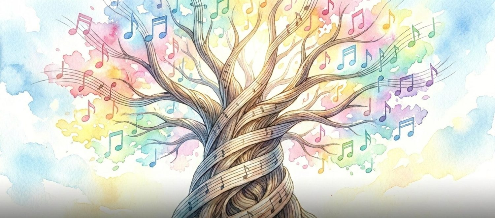
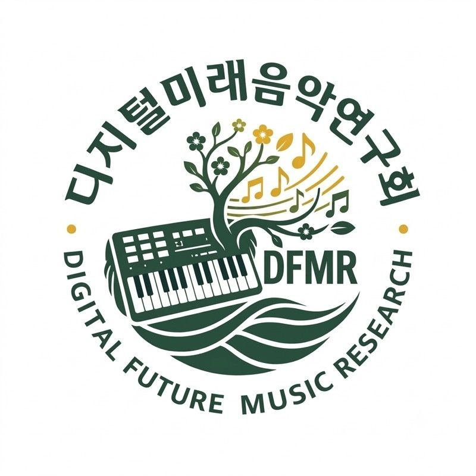
기술로 짓고,
동료와 넓히다
그리고 교사 공동체와 함께한 한 해의 기록
디지털미래음악연구회(DFMR) · 순천중등미래음악연구회(SFMR) 회장
기록 기간 2026. 1. ~ 2026. 10. 7.
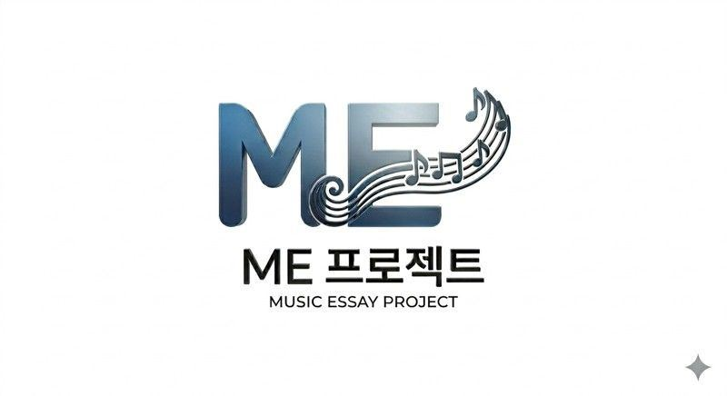
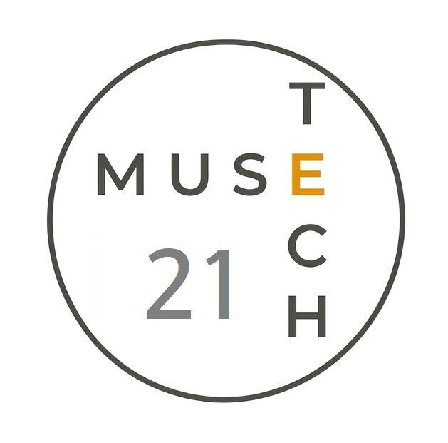
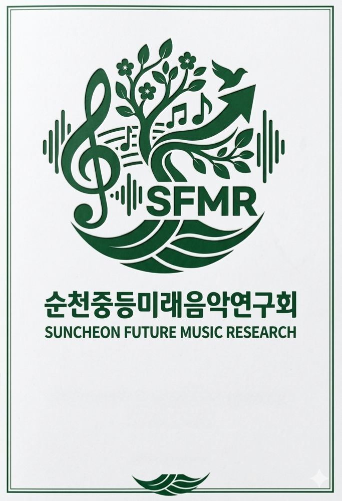
이 보고서를 읽는 방법
2026학년도에 수행한 수업·연구·연구회·연수 활동을, 실제로 생산된 문서와 기록만을 근거로 재구성한 성과 증빙용 보고서입니다.
1작성 근거와 분석 범위
분석 대상은 연구자가 2026년 한 해 동안 생산·수집한 자료를 모은 폴더 「2026 자료 다 때려 넣음」 전체이다. 실행 파일·라이브러리·임시 파일을 제외한 5,471개 파일(약 47.8GB)을 목록화하였고, 이 가운데 한글·워드·PDF·ODT·엑셀·발표 자료 등 문서 530여 건의 본문을 추출하여 날짜·수치·명칭을 대조하였다.
사진은 얼굴 모자이크 처리본과 제출 보고서 수록본을 중심으로 1,092장을 검토하여 활동을 대표하는 장면을 골라 실었다. 동일 문서의 여러 차수(예: 연구보고서 초안~32차안, 검토본 A~O안)는 최종본을 기준으로 삼고, 변화 과정은 작업 이력으로만 정리하였다.
2표기 원칙
- 실시·계획·예정의 구분 — 결과보고서·설문·사진으로 확인된 활동만 ‘실시’로 쓰고, 운영계획만 있는 활동은 ‘계획’, 2026. 10. 7. 이후 일정은 ‘예정’으로 표기하였다.
- 수치의 출처 — 모든 수치는 원자료에서 옮겼으며 재계산한 값은 그 사실을 밝혔다. 원자료끼리 수치가 다를 때는 두 값을 함께 적거나 참고치로 표시하였다.
- 심사 중인 연구 — 연구대회 출품작은 제출·심사 단계를 그대로 적고, 결과를 예단하는 표현은 쓰지 않았다.
- 근거 표시 — 쪽마다 근거 표시로 주요 출처 문서(공문 번호·파일명)를 밝혔다.
개인정보 보호
- 학생 사진은 모자이크 처리본·제출 보고서 수록본만 사용하고, 멀리 찍혀 식별이 어려운 장면 외에는 얼굴이 드러난 원본을 쓰지 않았다.
- 학생 이름, 학번, 상담 내용, 계정 정보는 싣지 않았다. 학생 서술은 원문을 옮기되 이름은 ○○로 가렸다.
- 수업 자료 속 인물 삽화는 교사와 학생이 생성형 AI로 만든 그림이며 실제 인물이 아니다.
자주 나오는 이름
| DFMR | 디지털미래음악연구회(디프머). 연구자가 회장을 맡은 전남 동부권 중등 음악교사 연구회 |
| SFMR | 순천중등미래음악연구회. 순천교육지원청 교원연구회 |
| RUPA | ME 프로젝트 4단계: 반응·이해·표현·성찰 (RUPA-S는 공유 단계를 더한 확장형) |
| BRIDGE-AI · 시나브로 · 오작교 | 2026년에 작성한 세 편의 실천사례 연구 이름 |
차례
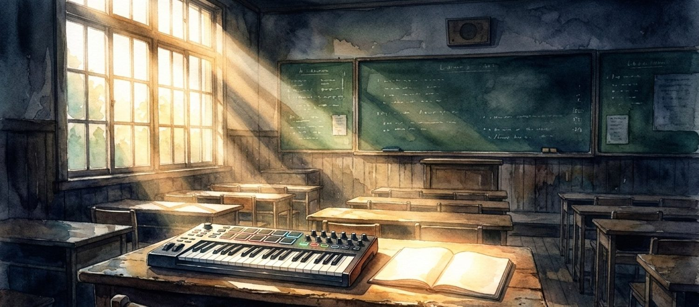
낡은 교실에서도 내일을 그리는 음악 시간
2026년 3월, 3학년 192명에게 열 가지를 물었다. ‘내 생각과 감정을 담아 노래 가사를 만들 수 있다’에 그렇다고 답한 학생은 11.5%였다. 열에 아홉이 스스로를 ‘노래를 못 만드는 사람’이라고 여기고 있었다. 반면 ‘친구의 창작물을 편견 없이 들어 줄 수 있다’는 문항은 가장 높았다. 학생들에게는 들어 줄 준비가 있었지만, 말할 수단이 없었다.
한 해의 일은 이 간극을 메우는 데서 시작되었다. 악기를 다루지 못해도 자기 이야기를 노래로 남길 수 있는 경로를 만들고, 생성형 AI가 준 결과를 그대로 쓰지 않고 음악의 언어로 고르게 했으며, 그 결과가 교실 밖의 실제 청중을 만나도록 무대와 플랫폼을 만들었다. 그리고 이 모든 설계를 혼자의 수업으로 끝내지 않기 위해 지역 음악교사들과 연구회를 꾸리고, 공개수업과 연수로 나누었다.
이 보고서는 그 과정을 ‘무엇을 했는가’보다 ‘무엇이 남았는가’를 중심으로 정리한 기록이다. 수업 산출물, 연구보고서, 공문, 설문 원자료, 개발한 웹 플랫폼의 설계 문서가 그 증거이다.
꿈을 연주하는 지휘자
…
한 사람 한 사람의 미래를 믿으며
내일을 향해 노래한다
- AI는 창작을 대신하지 않는 동반자이다 — 기술 인본주의
- 평가의 대상은 완성도가 아니라 수정의 기록이다
- 좋은 수업은 내려받아 바로 쓰는 형식으로 나눈다
숫자로 보는 2026년
수업·연구·연구회·연수의 네 영역에서 확인되는 대표 지표를 모았다. 모든 수치는 해당 쪽의 근거 문서와 연결된다.
가장 크게 움직인 지점
심사가 진행 중인 연구
2026년을 요약하는 다섯 가지 성과
음악 에세이(ME) 프로젝트의 RUPA 4단계와 프롬프트 4칸 카드로, 연주 기능을 전제하지 않는 창작 경로를 만들었다. 3학년 265명이 자기 이야기를 가사로 쓰고 AI 음원 2종을 비교·선택해 리릭 비디오로 완성하였다.
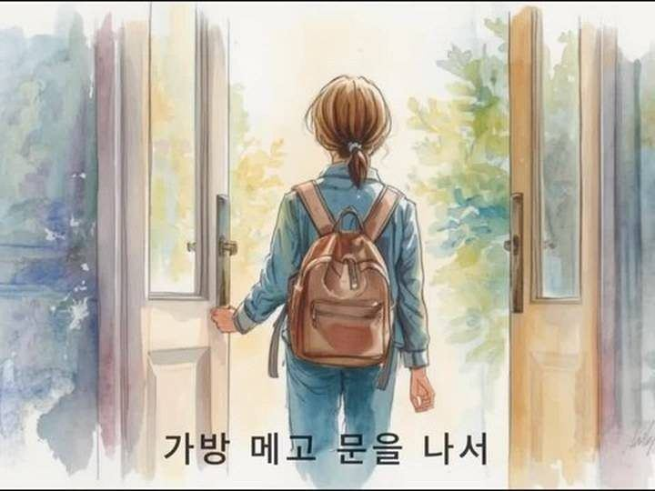
전남 학생 공통 계정(@ai.jne.kr)으로 로그인하는 수업용 웹 플랫폼을 직접 개발하였다. 과제형 수행평가 금지와 265명 발표 기회라는 두 난제를 ‘수업 중에만 열리는 제출’과 ‘앱 안 1분 발표 녹화’로 풀었다.
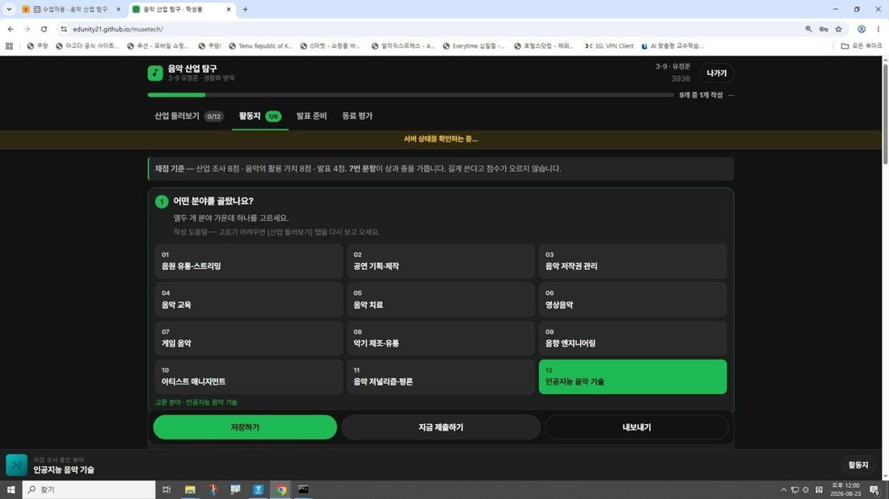
같은 해의 실천을 스마트교육(BRIDGE-AI), 학교예술교육(시나브로), 진로교육(오작교)의 세 관점으로 각각 구조화하였다. 수업 효과는 사전·사후 독립표본 t-검정과 효과 크기로 검증하였다.
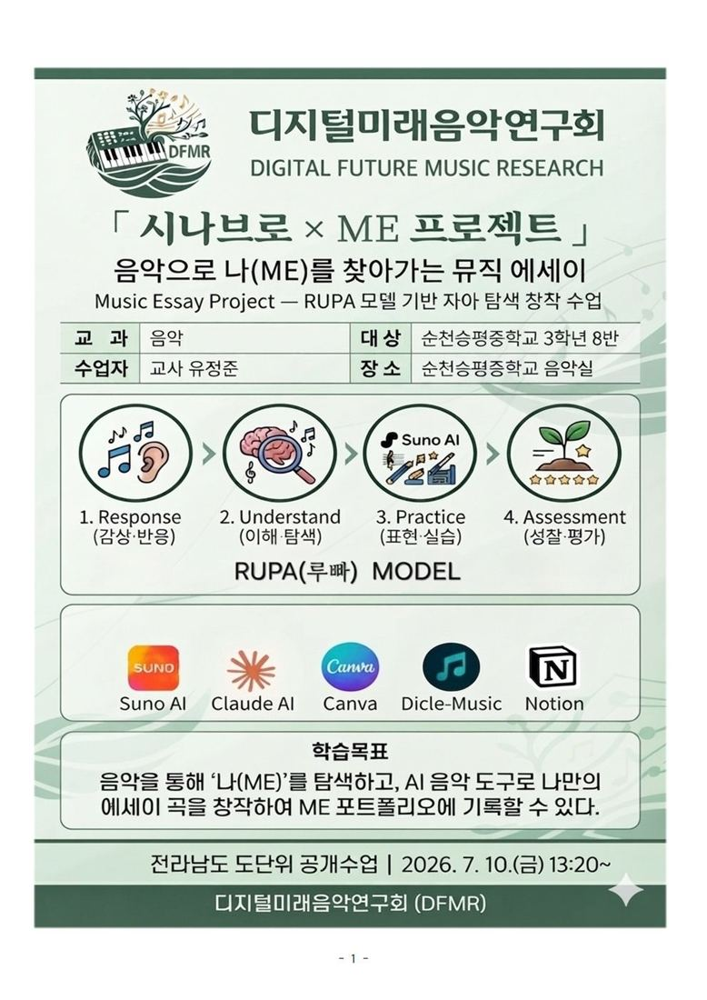
도교육청 「AI·디지털 활용 수업·평가 연구회」로 선정된 DFMR의 회장으로 27명의 교사와 공동 개발·상호 참관을 운영하고, 7. 10. 도단위 공개수업을 열었다. 2차 공개수업(11. 20.)을 예고하였다.
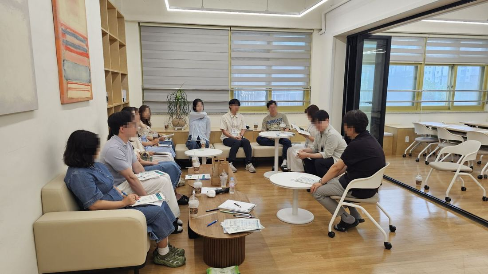
KERIS·전남교육연수원 등 8개 과정 142시간의 연수를 이수하고 배운 것을 바로 수업 설계에 반영하였다. 전문과정 성장계획서에서는 학습 증거 중심의 수업 분석으로 다음 단계를 설계하였다.
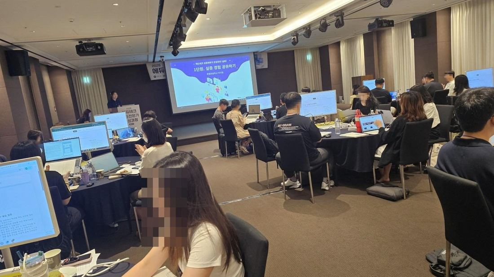
연간 타임라인 ① 1월 ~ 6월
연구 계획에서 실천, 공개, 연구보고서 제출로 이어진 한 해의 흐름이다.
- 순천승평중 교가 3가지 버전 편곡(기존·디지털·인디밴드)
- 학교 노래 「안녕, 나의 승평」 제작
- (2025. 12.) 통일노래 「판문열차」·미디음악교실 운영 기반
- 오작교 프로젝트 연구계획서 작성(2. 3.)
- 신학기 수업 설계 준비
- 3학년 192명 사전 실태 조사
- 표준화 심리검사(3. 18.)
- SFMR 운영계획서 작성(3. 26.)
- 스마트교육 연구대회 계획서 제출(공문 2987)
- AI·디지털 기반 수업 역량 강화 기본과정(4. 14.~5. 9.)
- SFMR 조직·운영 협의
- SFMR 1차 정기회의·DFMR 사전 모임(5. 13.)
- AI·디지털 활용 수업·평가 연구회 공모 신청(5. 17.)
- 리릭 비디오 「달빛이 품에 안은 노랫말」(5. 25.)
- 에듀테크 실증전문가 기본과정(6. 13.~20.)
- SFMR·DFMR 공동 에듀테크 기반 활용 연수(6. 17.)
- 인공지능 활용 선도교사 연수 시작(6. 23.)
- 1차 공개수업 참관자료 제작
연간 타임라인 ② 7월 ~ 12월
하반기는 공개수업과 세 편의 연구보고서 완성, 2학기 WE 프로젝트로 이어졌다. 굵은 글씨는 대외적으로 공개된 주요 일정이다.
- 1차 도단위 공개수업 「시나브로 × ME 프로젝트」(7. 10.)
- ME 프로젝트 학생 완성작·리릭 비디오 제출
- 코칭 역량강화 연수(7. 22.~24.)
- 사후 설문 수집 시작
- 실증전문가 심화·중등 AI 심화 연수(8. 3.~8.)
- 음악 산업 탐구 플랫폼 개발(8. 17.)
- 스마트교육 보고서 초안~32차안(8. 20.~30.)
- DFMR 에듀테크 활용 연수(ZEP, 8. 28.)
- MUSICALINUS 제작소 배포(9. 7.~8.)
- 스마트교육 검토본 A~O안 → 제출(9. 18. 마감)
- 전문과정 성장계획서 작성(9. 15.~16.)
- 시나브로 보고서 1안·2안(9. 22.~23.)
- 오작교 보고서 편집본·웹 플랫폼(10. 1.~3.)
- 시나브로 제출용 최종안(10. 5.)
- DFMR 우수사례 발표 자료(10. 7.)
- 스마트교육 1차 심사(10. 13.)·발표 심사(10. 22.) 예정
- 2차 도단위 공개수업 「ME에서 WE로」(11. 20.) 예정
- WE 프로젝트 6차시 운영
- DFMR 결과 분석·자료 보완
- DFMR 성과 공유·자료집 제작 예정
- 2학기 Ⅳ단원 WE 프로젝트(평가계획) · 승평제(12. 29.)
하나로 이어진 다섯 개의 활동 영역
2026년의 활동은 따로 떨어진 업무가 아니라 학생의 음악적 성장을 중심에 둔 하나의 순환으로 설계되었다. 수업에서 생긴 문제는 플랫폼으로 풀고, 그 결과를 연구로 검증하며, 연구회와 연수로 넓히고 다시 수업으로 돌아왔다.
음악적 성장
감상·산업 탐구·캠페인송
@ai.jne.kr 로그인
오작교 보고서 3편
공개수업·자체 연수
전문과정 성장계획
문제 → 도구
도구 → 검증
검증 → 확산 → 환류
자료로 본 한 해의 리듬
보고서의 근거가 된 폴더를 파일 단위로 분석하였다. 파일이 만들어지고 고쳐진 시점은 그대로 한 해의 활동량을 보여 준다.
1월별 파일 생성·수정 건수
7월(1차 공개수업·학생 산출물)과 8~9월(연구보고서 초안~32차안·검토본, 플랫폼 개발)에 작업이 집중되었다. 10월은 7일까지의 집계이다.
2유형별 구성 (총 5,471개)
3주요 폴더와 담긴 내용
| 폴더 | 주요 내용 | 파일 수 |
|---|---|---|
| 2026. 스마트실천사례 연구대회 | 연구보고서 차수별 원고, 검토본, 설문 원자료, 사진·모자이크 처리, ME 프로젝트 자료 | 2,692 |
| 진로 | 학교 진로교육 공문·결과보고서, 오작교 보고서 편집본, 보고서 작업 기록 | 1,243 |
| 수업자료 · 이음실2 | 수업곡 음원, 리릭 비디오, 수업용 이미지, 평가계획, 명렬표 | 518 |
| 민들레 · DFMR · DFMR_공개수업 | 연구회 운영(공모·등록부·명찰), 1차 공개수업 참관자료, SFMR 자료 | 336 |
| 2026. 학교예술교육실천사례 연구대회 | 시나브로 보고서 1안~창A안, 디자인 변형 11종, 요약서 | 45 |
| WE 프로젝트 · 전문과정 · 오작교 | 플랫폼 소스와 설치 안내, 성장계획서 판본, 오작교 웹 플랫폼 | 250+ |
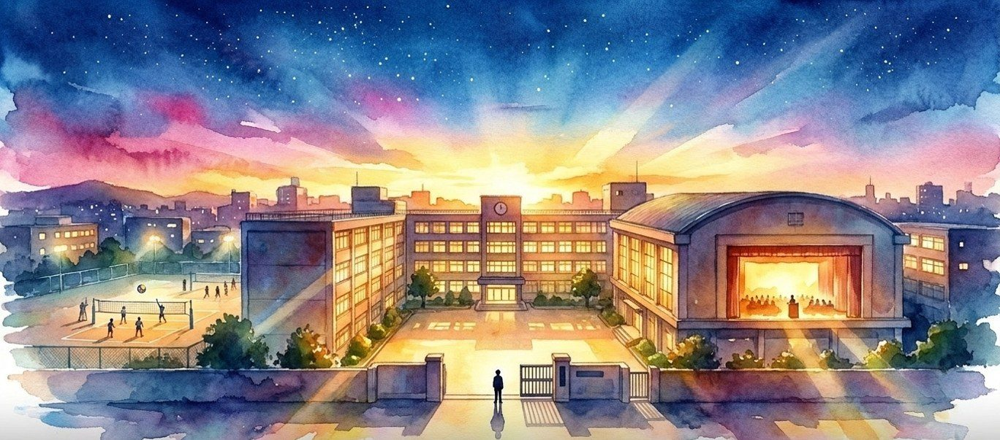
악기를 다루지 못해도
‘내가 쓴 노래’가 남는 음악 시간
3학년 9개 학급 265명과 함께한 음악 수업의 한 해를 담았다. 1학기에는 개인의 이야기를 노래로 만드는 ME 프로젝트를, 2학기에는 이를 모둠의 뮤지컬로 넓히는 WE 프로젝트를 설계하였다.
감상(진달래꽃 × 서양음악사)과 생활화(음악 산업 탐구), 계기교육 캠페인송까지 네 개의 성취기준을 하나의 흐름으로 묶었고, 결과는 사전·사후 설문과 산출물로 검증하였다.
수업 설계의 출발점, 사전 실태 조사
2026년 3월, 3학년 192명에게 음악 창작과 디지털 도구에 대한 10개 문항(5점 척도)을 물었다. 평균 3.0을 넘은 문항은 셋뿐이었다.
→조사에서 확인한 세 개의 장벽
처방장벽마다 놓은 수업의 처방
네 개의 성취기준을 하나로, 24차시 프로젝트
백워드 설계로 ‘무엇을 확인할지’를 먼저 정하고 도구를 맨 뒤에 배치하였다. 기술이 목표를 잠식하지 않게 하려는 원칙이다.
| 성취기준 | 재구성한 학습 내용 | 차시 | 연계 교과 |
|---|---|---|---|
| [9음01-04] 주제에 맞는 음악극을 만들어 표현한다. | ME 프로젝트 — 나의 음악 에세이 가사 쓰기 → AI 작곡 → 리릭 비디오. 프롬프트 원본과 수정본을 남긴다. | 8 | 정보·미술 |
| [9음02-02] 다양한 연주형태의 음악을 듣고 특징을 구별하여 설명한다. | 한 편의 시, 스무 개의 시대 「진달래꽃」 한 편을 서양음악사 20개 양식으로 바꿔 듣는 통제된 비교 감상 | 6 | 국어·역사 |
| [9음03-02] 음악과 관련된 산업에 대해 조사하여 발표한다. | 음악으로 먹고사는 사람들 12개 분야를 265명 전원이 조사·발표하고 진로 체험과 연계 | 4 | 진로·정보 |
| [9음03-01] 음악과 관련된 다양한 행사에 참여하고 평한다. | WE 프로젝트 — 우리 안의 뮤지컬 모둠 뮤지컬 넘버 창작과 상호 피드백, 소축제·교내 방송 공유 | 6 | 국어·창체 |
평가과정중심 평가 — 배점의 40%를 ‘고른 이유’에
왜 40%인가
AI 창작 영역의 비중을 크게 둔 이유는 그 영역의 채점 대상이 결과물이 아니라 프롬프트 원본·수정본, 2종 이상의 생성 이력, 선택 근거 진술이기 때문이다. 과정이 비어 있으면 상위 수준을 받을 수 없게 설계하여, 표절과 대리 작성에 대한 실질적인 대응이 되도록 하였다.
평가가 곧 안내가 되도록
루브릭은 프로젝트 시작 시점에 학생에게 공개하여 평가가 곧 학습의 안내가 되도록 하였다. 수행 결과는 학생별 교과 세부능력 및 특기사항 기록으로 이어져 수업·평가·기록의 일체화를 이루었다.
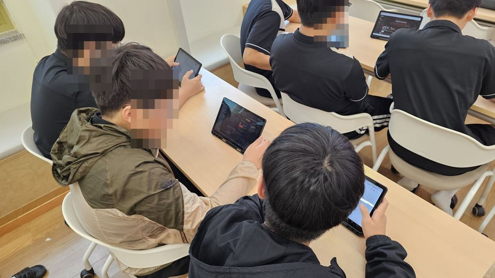
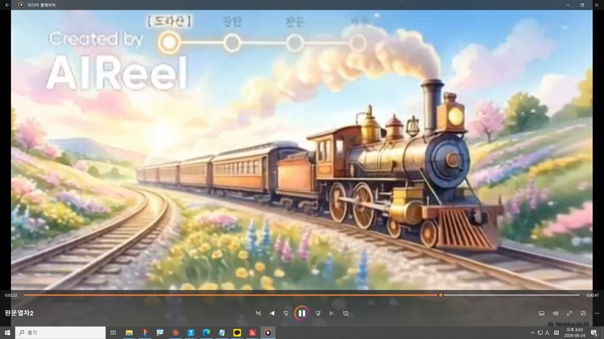
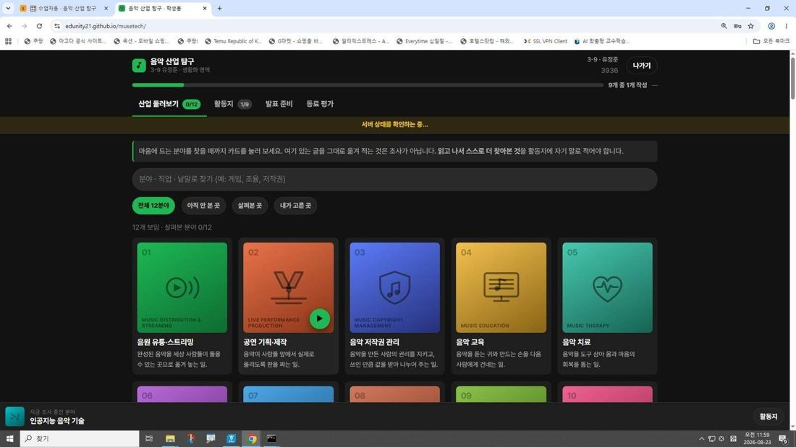
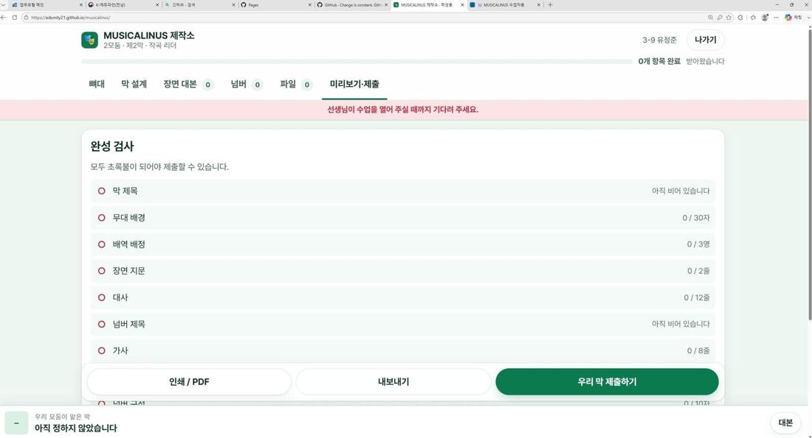
2학기 3학년 음악과 교수·학습 및 평가 운영 계획
2학기 17시간(1~9반)을 표현·생활화 두 수행평가와 WE 프로젝트로 설계하였다. 수행평가 100%, 표현과 생활화를 각각 50%씩 반영한다.
표현노래 부르기 (실기 · 100점)
| 채점 요소 | 배점 |
|---|---|
| 음정·리듬·박자·발성·자세·호흡을 정확하게 표현 | 40 |
| 음색과 화음이 조화롭고 악곡의 특성을 창의적으로 표현 | 40 |
| 준비도와 자신감, 앙상블의 상호작용 | 20 |
성취기준 [9음01-01] · 실기평가 + 교사 관찰 및 기록 · 9~10월
생활화음악 산업 탐구 (서술·구술 · 100점)
| 채점 요소 | 배점 |
|---|---|
| 산업 조사 — 하는 일 2문장 이상, 직업 2가지 이상, 조사처 2곳 이상 | 40 |
| 음악의 활용 가치 — 쓰이는 장면과 음악이 없을 때 사라지는 것 | 30 |
| 발표 수행 — 핵심 문장을 50초~1분 동안 설득력 있게 | 30 |
성취기준 [9음03-02] · 수업 중 산출물 + 교사 관찰 · 10~11월
운영 원칙
- 수행평가는 일제고사형 지필평가나 과제형 평가로 실시하지 않고, 특정 시기에 몰리거나 정기시험 준비기간과 겹치지 않도록 배치하였다.
- 학기 초에 시기·영역·기준·방법을 공개하고, 채점 요소별 성취수준(상·중·하)을 학생이 스스로 확인하며 연습하도록 안내하였다.
- WE 프로젝트는 수행평가에 반영하지 않는 프로젝트 학습으로 운영하되, 연습~공연 과정의 성장과 기여를 관찰해 세부능력 및 특기사항 작성 자료로 활용한다.
성취도성취율과 성취도 기준
학사학교 일정과 겹치지 않게
ME = Music Essay, 음악으로 쓰는 나의 에세이
1학기 ME 프로젝트는 음악으로 나를 표현하고 포트폴리오로 기록하는 자아 탐색 창작 수업이다. 학생은 자신을 가장 잘 표현하는 음악을 고르고, 그 음악과 자신이 닮은 이유를 탐색한 뒤, AI와 함께 나만의 에세이 곡을 만든다.
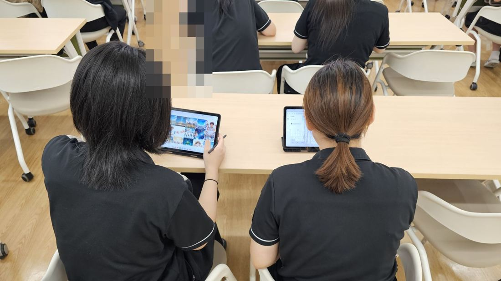
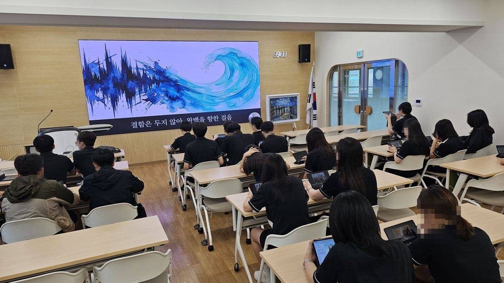
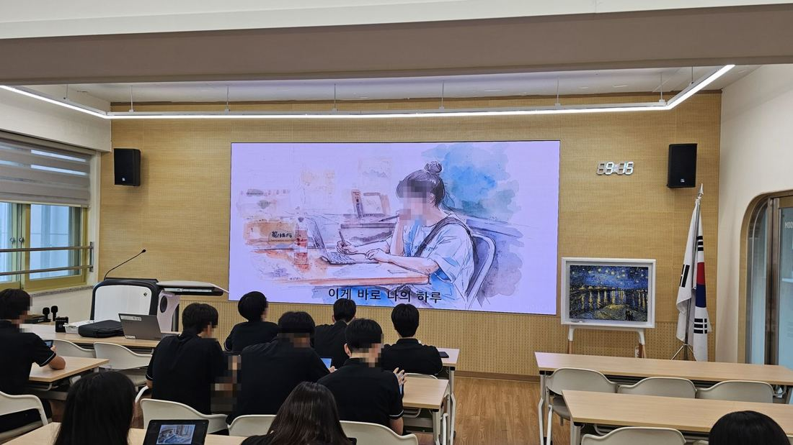
원칙도구를 켜기 전에 정하는 세 가지
목적음악 활동으로 기르는 사회정서 역량
- 자기 인식·자기 관리 — 감정과 강점을 파악하고 표현한다
- 사회적 인식·관계 기술 — 친구의 음악을 듣고 공감·응원한다
- 책임 있는 의사결정 — AI 결과를 그대로 쓰지 않고 고른 이유를 밝힌다
도구사용한 에듀테크
형체 없는 소리가 나의 형상이 되는 RUPA 4단계
반응(Response)·이해(Understand)·표현(Practice)·성찰(Assessment)의 머리글자를 따 「RUPA(루빠)」라 이름 지었다. ‘루빠(rūpa)’는 본래 ‘형색·형상’을 뜻하는 말이다.
이 경로 어디에도 악보를 읽거나 악기를 다루는 관문이 없다. 학생이 하는 일은 자기 이야기를 문장으로 쓰고, 그 문장이 어떤 소리가 되어야 하는지 정하고, 나온 결과를 듣고 고르는 것이다. 사전에 11.5%였던 창작 진입 장벽이 낮아진 이유가 여기에 있다고 보았다.
예시단계별 학생 응답 샘플 (참관자료 수록)
#따뜻함#그리움#설렘#행복
[Verse] 학교 복도 끝 창문 너머로 / 봄 햇살이 내 어깨를 두드려
[Chorus] 괜찮아 오늘도 잘 해냈어 / 이 순간이 나의 전부야
스타일: Soft Acoustic, Warm Indie Folk, Gentle Piano
45분 안에 ‘반응’에서 ‘성찰’까지
1차 공개수업 지도안의 45분 흐름이다. 창작(Practice)에 가장 긴 15분을 두고, Suno 8분·Claude 7분으로 나누어 음원 생성과 리릭 플레이어 제작을 이어 붙였다.
활동지ME 프로젝트 학생 활동지의 구성
| Ⅰ | 오늘의 활동 목표 — 닮은 음악 듣기, 음악을 말과 글로 표현하기, AI로 나만의 노래, 성찰 |
| Ⅱ | 음악과 나, 얼마나 닮았을까? (R·U) — 곡 정보, 탄생 배경, 나를 닮은 가사 한 줄, 분위기·악기·멜로디 전개, “나는 ~한 점에서 이 음악과 닮았다.” |
| Ⅲ | AI로 나만의 노래 만들기 (P) — Verse에 지금의 나(두 줄 이상), Chorus에 내가 원하는 나와 응원 |
| Ⅳ | 성찰 (A) — 새롭게 알게 된 나, 한 줄 평과 별점, 다음 에세이 예고 |
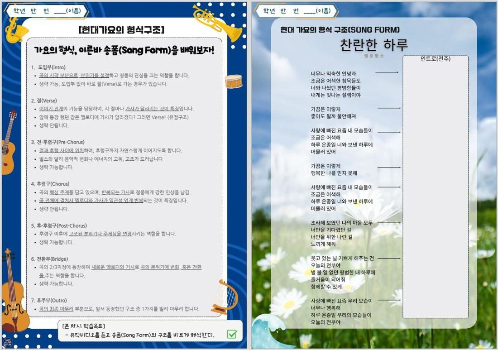
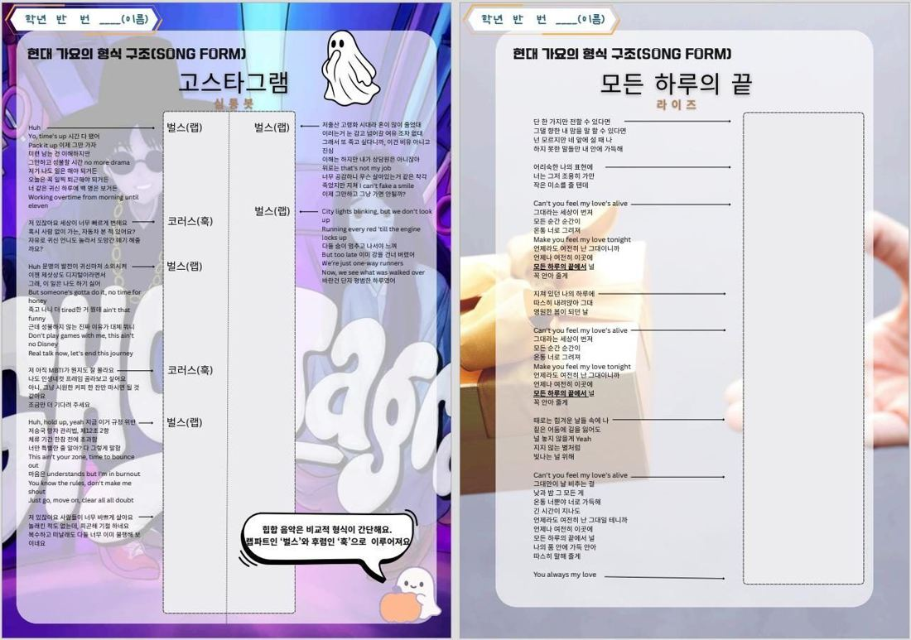
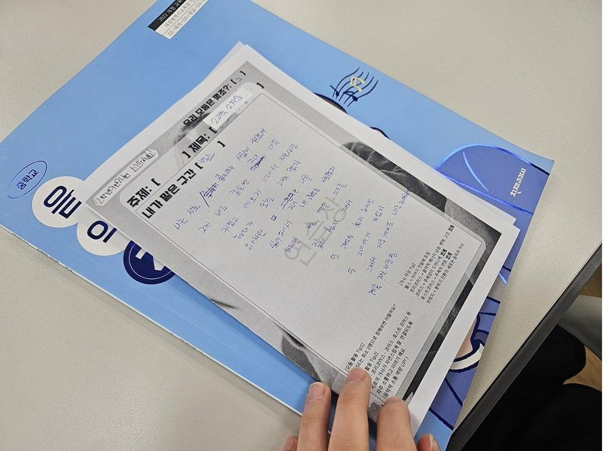
운영수업 운영의 여섯 가지 포인트
- 심리적 안전감 — ‘정답 없음’을 수업 시작부터 반복해 강조한다.
- 자발적 공유 — 발표는 희망자만, 감상 뒤 응원 한마디로 마무리한다.
- 시간 유연성 — R·U가 길어지면 P를 다음 차시로 넘긴다.
- 완성보다 과정 — 플레이어가 완벽하지 않아도 기록에 집중한다.
- 개별 지원 — 가사가 어려운 학생은 감정 태그부터 고르게 한다.
- 포트폴리오 연속성 — 다음 에세이 주제를 예고해 기록을 잇는다.
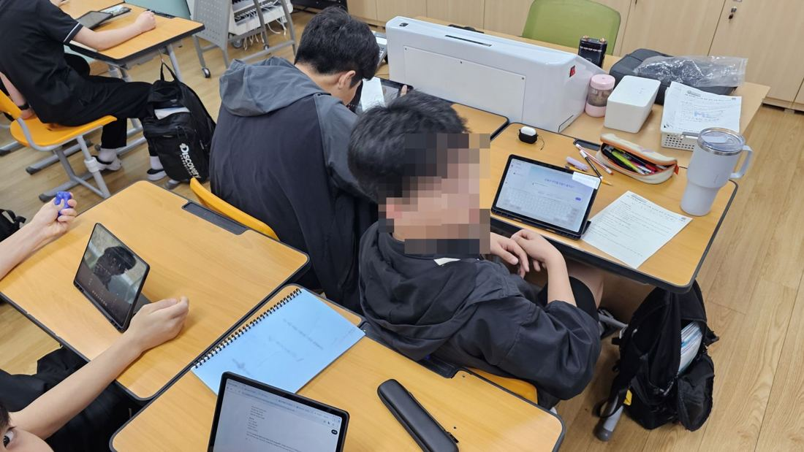
P 15′가장 긴 15분의 안쪽
Suno 8′
구조화 태그 팁
Claude 7′
AI가 준 것을 그냥 쓰지 않는다 — 프롬프트 4칸 카드
한 덩어리로 쓴 프롬프트는 결과가 마음에 들지 않으면 처음부터 다시 만들 수밖에 없다. 네 칸으로 나누면 고칠 칸이 보인다. 이것이 ‘AI를 쓴다’와 ‘AI와 협력한다’를 가르는 지점이다.
연결감상에서 찾은 값이 곧 프롬프트가 된다
| 분석 항목 | 학생이 적는 것(감상) | 이 값이 하는 일(창작) |
|---|---|---|
| 빠르기 · 박 | “느리고 박이 잘 안 느껴져요” (약 70 BPM) | Genre 칸의 BPM 수치 |
| 조성 · 화성 | “밝다가 후렴에서 살짝 어두워져요” | Mood 칸의 감정 형용사 |
| 악기 편성 | “처음엔 피아노만, 후렴에 드럼이 들어와요” | Instruments 칸의 등장 순서 |
| 목소리 · 짜임새 | “한 명이 부르다 후렴에서 여럿이 겹쳐요” | Vocal Structure 칸의 파트 배분 |
학생은 자기가 만든 「음악적 장치 분석표」를 근거로 빠르기·조성·악기 편성을 프롬프트에 직접 지정한다. 음악 시간에 배운 개념이 AI를 부리는 명령이 되는 순간이며, AI 활용이 곧 음악 개념의 적용 활동이 되도록 설계한 지점이다.
출발송폼(Song Form) 이해에서 출발
형식에 대한 이해 없는 창작은 단편적인 악상의 나열에 그치기 쉽다. 그래서 창작은 대중가요 15곡의 가사지에 Intro·Verse·Pre-Chorus·Chorus·Bridge·Outro를 표시하는 송폼 분석에서 시작하였다.
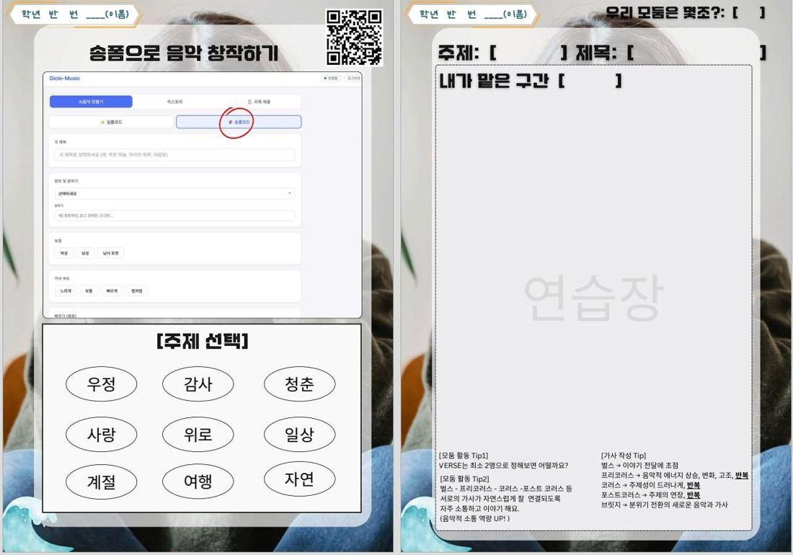
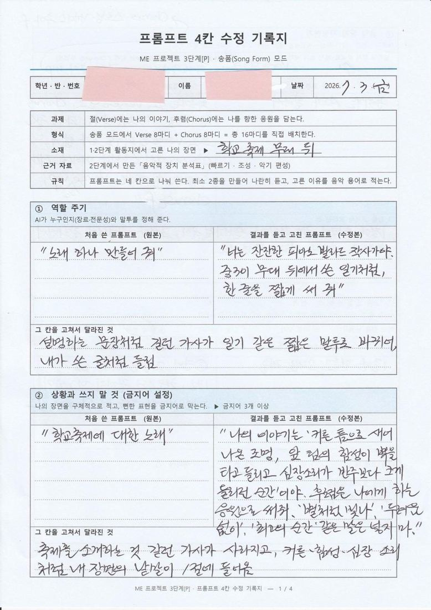
한 학생의 프롬프트, 원본에서 수정본까지
과제는 ME 프로젝트 3단계 — 절에는 나의 이야기, 후렴에는 나를 향한 응원. 송폼 모드에서 Verse 8마디 + Chorus 8마디를 직접 배치하고, 1·2단계에서 고른 장면 ‘등굣길’을 소재로 삼았다.
| 네 칸 | 처음 쓴 프롬프트(원본) | 결과를 듣고 고친 프롬프트(수정본) | 그 칸을 고쳐 달라진 것 |
|---|---|---|---|
| ① 역할 주기 | “중학생 노래 만들어 줘” | “너는 잔잔한 어쿠스틱 팝 전문 작사가야. 중3이 자기 이야기를 쓴 것처럼, 짧은 문장으로 써 줘.” | 시처럼 어렵던 낱말이 또래 말투로 내려오고, 한 줄이 짧아져 따라 부를 수 있게 됨 |
| ② 상황과 쓰지 말 것 | “학교 가는 길에 대한 노래” | “나의 이야기는 ‘늦잠 잔 아침, 버스를 놓치고 뛰다가 올려다본 하늘’이야. 후렴은 나에게 하는 응원으로. ‘청춘·꿈을 향해·빛나는 내일’ 같은 말은 넣지 마.” | 누구에게나 해당되던 가사가 사라지고, 내 장면이 1절에 들어옴 |
| ③ 음악 장치 지정 | 분위기는 AI가 알아서 | “빠르기 ♩=92, 장조로 밝게. 악기는 어쿠스틱 기타·피아노·가벼운 드럼. Verse는 기타 위주로 얇게, Chorus에서 드럼과 피아노를 함께 넣어 두껍게.” | 분석표의 값을 옮기자 Verse와 Chorus의 짜임새가 갈려 후렴이 후렴처럼 들림 |
| ④ 2종 비교·선택 | 1종만 만들고 그대로 제출 | ③칸의 악기 편성만 바꿔 2종 생성 — 1번: 처음부터 드럼 / 2번: Verse는 기타만, Chorus부터 드럼·피아노 | 같은 가사라도 편성만 바꾸면 후렴의 셈여림·짜임새가 달라짐을 비교로 확인 |
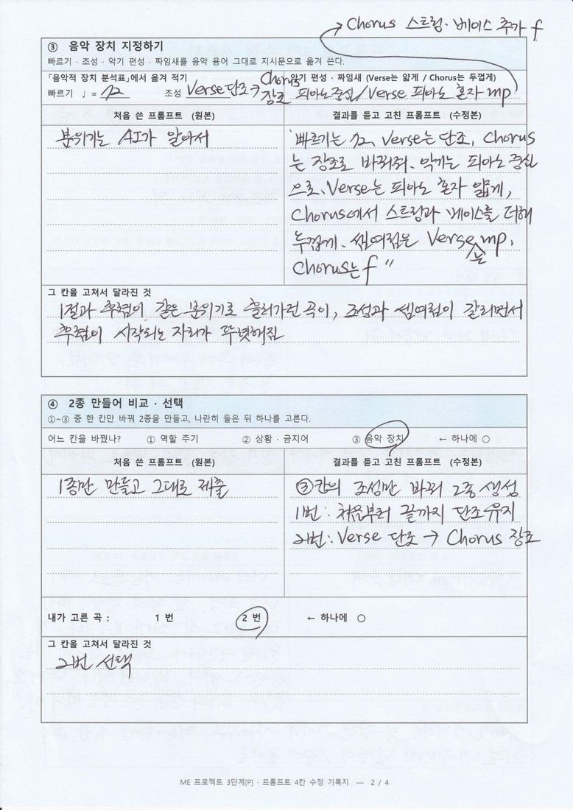
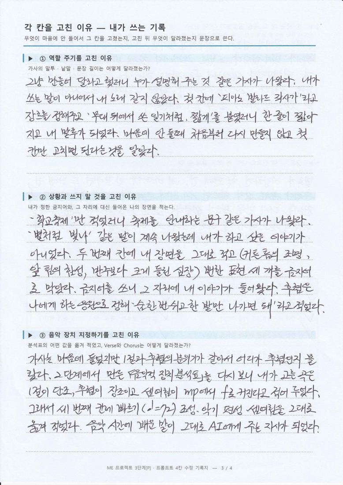
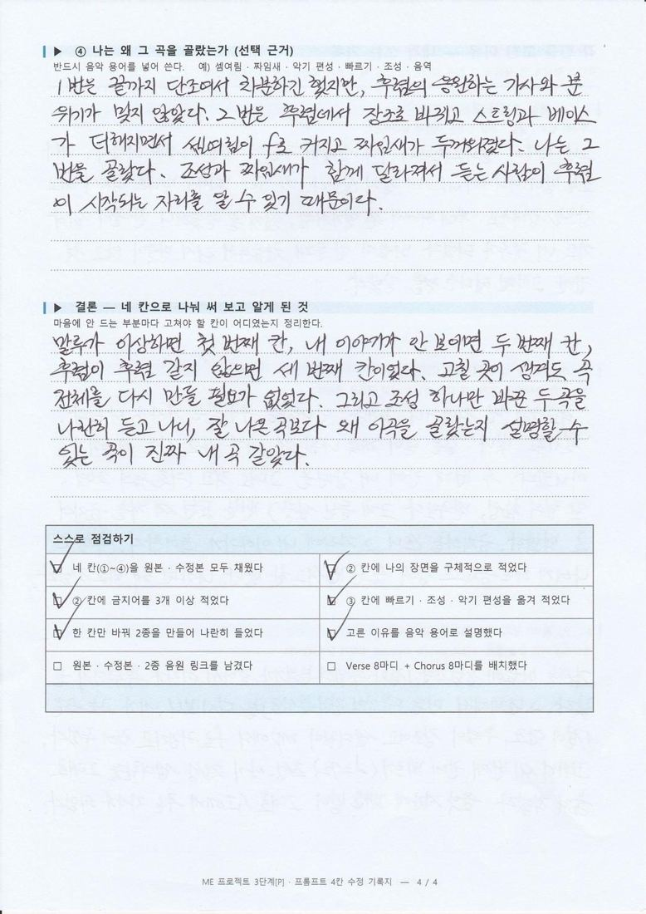
학생이 발견한 규칙
네 칸으로 나눈 결과, 마음에 들지 않는 부분마다 고칠 칸이 달랐다. 말투가 이상하면 첫째 칸, 내 이야기가 보이지 않으면 둘째 칸, 후렴이 후렴 같지 않으면 셋째 칸이었다.
이 기록을 채점하는 기준
루브릭의 ‘프롬프트 수정 이력’ 상(A)은 네 칸 중 세 칸 이상을 결과를 듣고 고쳤고, 칸마다 고친 이유가 서로 다른 경우이다. 한 칸만 고쳤거나 기록이 없으면 하(C)이다.
“두 개를 만들고 왜 골랐는지 말할 수 있는 곡이 진짜 내 곡 같았다”
같은 학생이 칸마다 고친 이유를 직접 적은 기록이다. 수정 이력이 어떻게 음악적 사고의 증거가 되는지 보여 준다.
노래에서 영상으로 — 학생 산출물
학생은 자기가 쓴 가사에 맞춰 AI로 이미지를 만들고, 음원·가사·이미지를 결합한 리릭 비디오로 작품을 완성하였다. 아래 장면은 모두 학생 작품의 실제 화면이다.
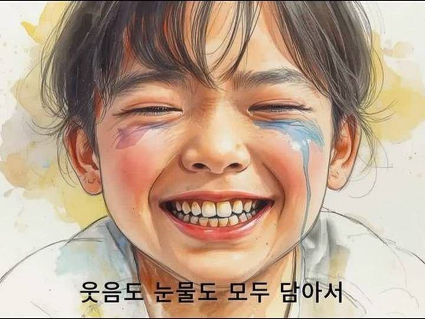
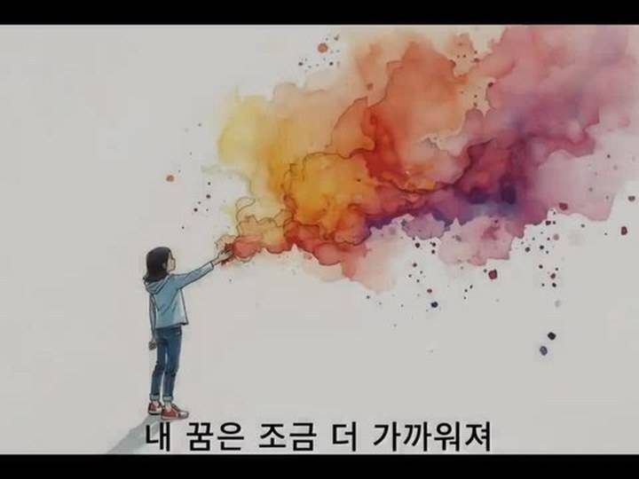
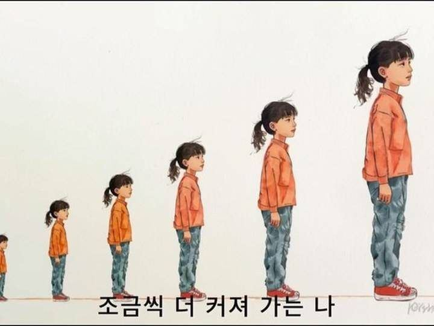
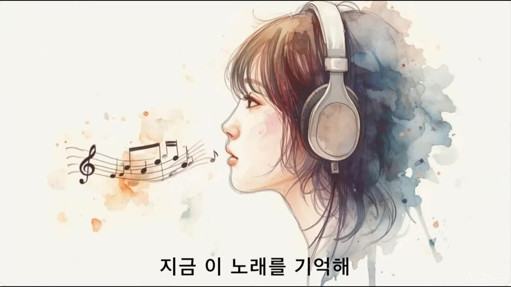
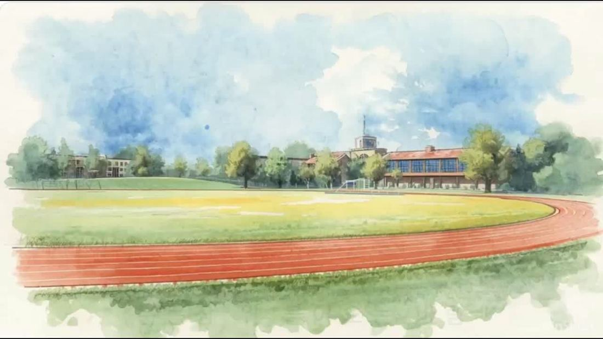
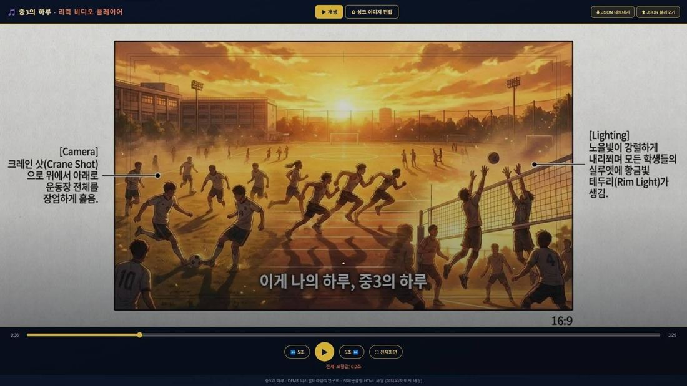
완성 작품은 파일 안에만 남지 않았다. 점심시간 소축제 무대, 교내 방송, 급식실 QR 게시로 실제 청중을 만났고(→ 34쪽), 우수작품은 NotebookLM 해설과 함께 1차 공개수업에서 참관 교사에게 소개되었다. ※ 인물 이미지는 학생이 AI로 생성한 삽화이며 실제 얼굴이 아니다.
두 갈래의 제작 경로와 기록으로 이어지는 평가
학생의 디지털 숙련도 차이를 고려해 결과물을 완성하는 길을 두 가지로 열어 두었다. 어느 길을 택해도 작품은 QR로 공유되고 교과 세부능력 및 특기사항으로 기록된다.
플랜 A — 영상 편집 경로
플랜 B — 바이브 코딩 경로
기록Notion ME 포트폴리오 — 누적되는 음악 일기
| 에세이 제목 | 관련 음악 / 아티스트 | 진행 상태 | 날짜 | AI 음원 링크 | 별점 |
|---|---|---|---|---|---|
| 나의 17살을 대변하는 노래 | 봄 사랑 벚꽃 말고 / 아이유 | ✅ 완료 | 2026-07-10 | 🔗 링크 | ★★★★★ |
| 위로가 필요할 때 찾는 쉼표 | [다음 에세이 예정] | 🔜 예정 | — | — | — |
참관자료에 수록한 예시. 한 번의 수업 결과물이 아니라 학기 동안 이어지는 ‘나를 기록하는 음악 일기’가 되도록 설계하였다.
세특교과 세부능력 및 특기사항 기록 예시 (발췌)
비교두 경로 한눈에 비교
| 플랜 A — 영상 편집 | 플랜 B — 바이브 코딩 | |
|---|---|---|
| 주요 도구 | ChatGPT · Suno · Canva · InShot | Suno · Claude(코드 생성) · 오디오 싱커 |
| 결과물 | mp4 영상(자막·이미지 결합) | 단일 HTML 리릭 플레이어 + JSON 싱크 파일 |
| 남는 과정 기록 | 가사 초안·수정본, 이미지 프롬프트, 편집 타임라인 | 가사 줄별 등장 시각(초), 줄별 이미지 대응 |
| 어울리는 학생 | 영상 편집 앱에 익숙한 학생 | 설치 없이 브라우저에서 끝내고 싶은 학생 |
| 공유 | QR 업로드 · 학급 상영 | QR 하나로 어느 기기에서나 재생(계정·설치 없음) |
ME에서 WE로 — MUSICALINUS 우리 안의 뮤지컬
1학기 ME가 개인의 자기 이해에서 출발했다면, 2학기 WE는 이를 모둠의 공동 서사로 통합한다. 1학기 에세이에 반복해 나타난 소재(등굣길·성적·점심시간·진학 불안·졸업)를 교사가 6막 6넘버의 예시 대본으로 엮었다.
구조학급 하나가 뮤지컬 한 편이 된다
- 학급 = 6모둠 = 6막 — 30명 학급 기준 5명 × 6모둠. 모둠 번호가 곧 막 번호이다.
- 학생 = 배역 하나 + 제작 역할 하나 — 배역(지후·민서·유나·선생님·앙상블)과 대본·작사·작곡·편곡·발표 리더 역할을 나눈다.
- 예시 대본은 공통 뼈대 — 각 모둠은 자기 막의 장면 대본과 넘버를 새로 쓰고, Suno로 30초 데모 2종을 만들어 고른다.
- 교사 제작 웹 플랫폼에서 막 설계 → 장면 대본 → 넘버 → 파일 → 미리보기·제출이 이어진다(→ 42쪽).
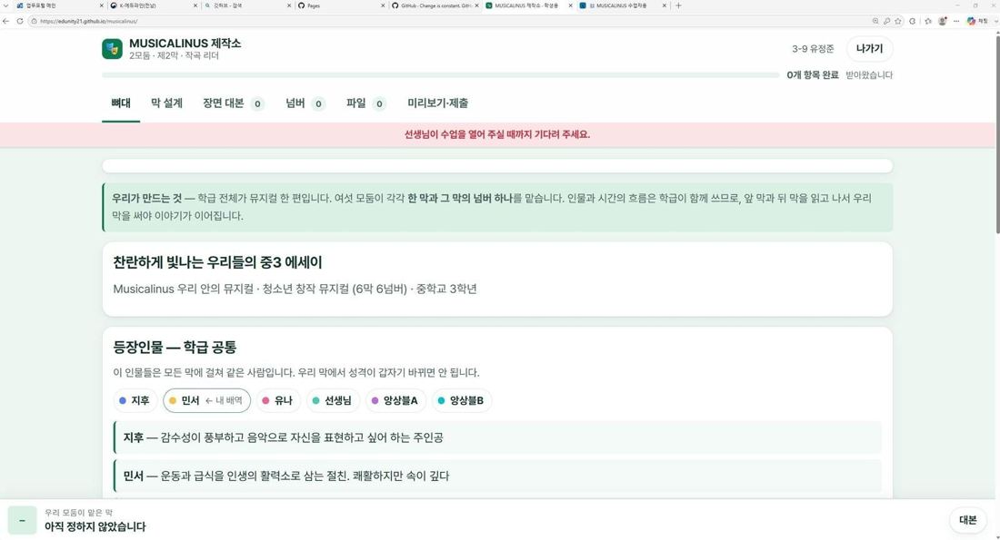
edunity21.github.io/musicalinus
확장ME에서 WE로 — 무엇이 넓어지는가
예시 대본 「찬란하게 빛나는 우리들의 중3 에세이」
6막 6넘버의 청소년 창작 뮤지컬 대본을 교사가 생성형 AI와 함께 집필하였다. 넘버마다 Suno 프롬프트(장르·분위기·악기·보컬 구성)를 수록해 학생이 그대로 실습할 수 있게 하였다.
1막08:00 AM — 시작되는 우리의 스토리
꿈과 현실이 부딪히는 낯선 교차로
수학, 영어, 국어 시간 틈바구니 사이로
어른이 될 날이 조금씩 밀려와
…
가슴 뛰는 이 순간을 숨길 수 없어
노래해, 우리의 찬란하고 빛나는 이야기!
프롬프트넘버 1의 Suno 프롬프트
| Genre | K-Pop Musical, Bright upbeat J-Rock, Orchestral Pop |
| Mood | Energetic, hopeful yet slightly overwhelmed, youthful, emotional pre-chorus |
| Instruments | Acoustic guitar introduction, driving drums, soaring strings, electric guitar chord riffs |
| Vocal Structure | Male solo (mellow) → Male solo 2 (bright) → Full high-school chorus (unison, powerful harmony) |
학생 플랫폼의 ‘작곡 리더’ 칸은 이 네 칸(Genre·Mood·Instruments·Vocal Structure)을 그대로 따른다. 1학기 프롬프트 4칸 카드의 ‘음악 장치 지정’이 모둠 창작의 공통 언어가 된다.
넘버수록 넘버와 장르
| 넘버 | 제목 | 장르 / 분위기 | 장면 |
|---|---|---|---|
| No.1 | 중3의 아침 | K-Pop Musical / J-Rock | 등굣길, 알람과 버스 정류장 |
| No.2 | 칠판 위의 걱정들 | Dramatic Musical Ballad | 성적표와 진로 고민 |
| No.3 | 3소박의 열기 | Funk Pop / Brass Ensemble | 점심시간 운동장과 급식실 |
| No.4 | 나를 위한 에세이 | Acoustic Pop Ballad / Lo-fi | 음악실의 ME 프로젝트 수업 |
| No.5 | 고등학교 검색창 | Emotional Rock Ballad | 노을녘 하굣길, 진학의 두려움 |
| No.6 | 피날레 — 우리의 3학년이 빛나게 | Grand Finale / Broadway Anthem | 축제의 밤 |
공유(Share)를 더한 RUPA-S 확장 모형과 6차시 설계
2학기 ‘음악극 만들기’ 단원을 6차시로 재구성하였다. 본시(4차시)는 11. 20. 2차 도단위 공개수업으로 공개한다.
5′
7′
8′
15′
7′
3′
차시6차시 운영 흐름
| 차시 | 활동 | 플랫폼 조작 |
|---|---|---|
| 1 | 뼈대 읽기 · 모둠·역할·배역 정하기 | [수업만] 50분 입장 |
| 2~3 | 막 설계와 장면 대본 쓰기(대사·지문) | 모둠 현황 ‘쓴 사람 n/m’ 확인 |
| 4 | 넘버 만들기 — 공개수업 · 프롬프트 → Suno 데모 2종 | [넘버] 탭 → [복사하기] |
| 5 | 다듬고 제출 · 완성 검사 11항목 | [수업+제출 열기] |
| 6 | 합본 대본 보고 연습 | [합본 대본] → 인쇄/PDF |
목표학습 목표(3차원)
- 지식 가사·멜로디·편곡 요소가 메시지 전달에 하는 역할을 설명한다.
- 기능 모둠원과 협업하여 공동 주제의 음악을 Suno·Claude로 창작·편집한다.
- 태도 친구의 작품을 존중하며 근거 있는 피드백을 주고받는다.
성찰WE 에세이 — 저작자성을 학생에게 묻다
환류1학기에서 발견한 두 문제와 해결
| 문제 | 원인 | 개선 |
|---|---|---|
| 기기를 잘 다루는 학생에게 작업이 몰림 | 역할을 미리 나누지 않아 자연 발생적 편중 | 5개 역할 카드(대본·작사·작곡·편곡·발표 리더) 사전 배부, 기여도를 동료평가에 반영 |
| 첫 생성물을 그대로 쓰는 학생 | 프롬프트를 매번 백지에서 시작해 시간 부족 | 프롬프트 4단계 카드를 모둠 책상에 상시 비치 |
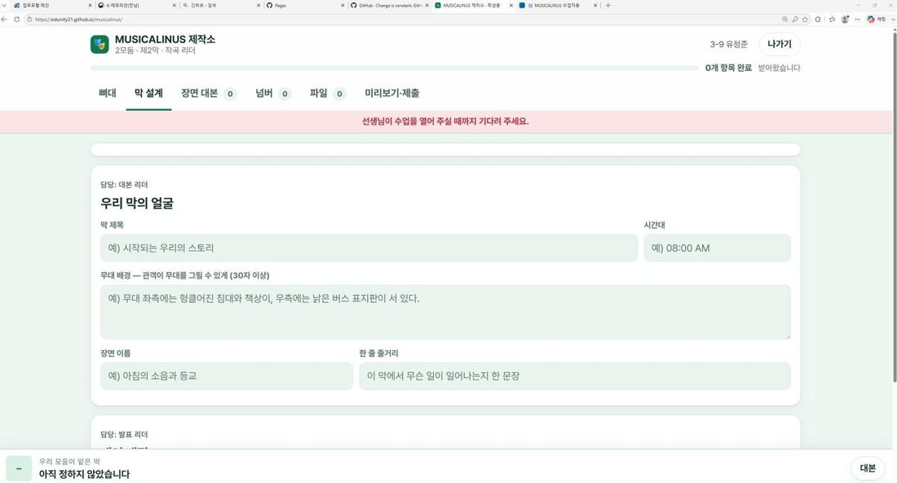
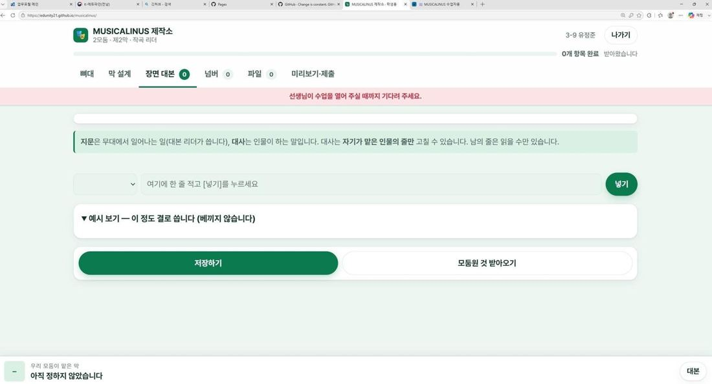
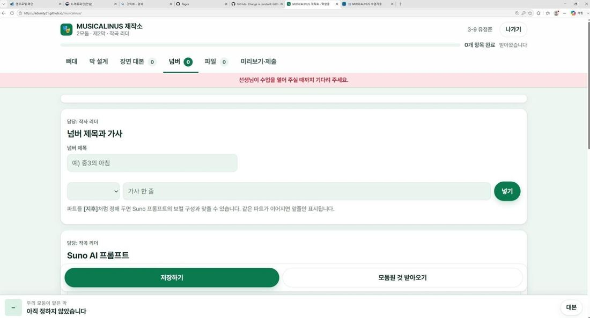
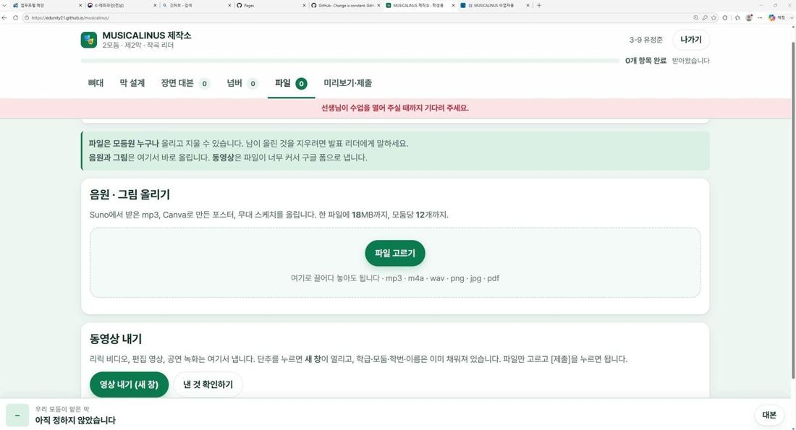
한 편의 시, 스무 개의 시대 — 진달래꽃 × 서양음악사
서양음악사를 ‘외우는 지식’에서 ‘들리는 차이’로 바꾸기 위해, 김소월의 시 「진달래꽃」 한 편을 서양음악사 20개 양식으로 편곡해 비교 감상하는 웹 플랫폼을 직접 개발하였다. 가사는 그대로 두고 음악만 바뀌는 통제된 비교 구조이다.
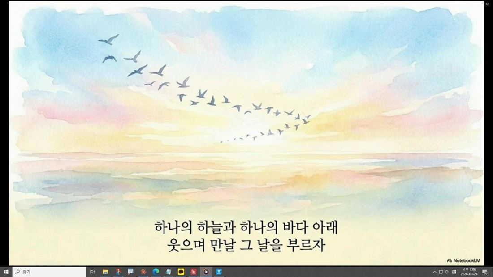
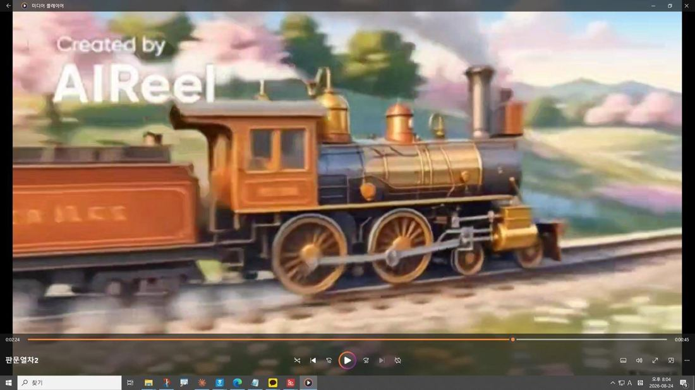
말없이 고이 보내 드리오리다
영변에 약산 진달래꽃
아름 따다 가실 길에 뿌리오리다
기능감상이 곧 기록이 되도록
- 시대 탐구 · 듣고 맞히기 · 순서 세우기 · 감상 활동지
- 웹에서 바로 제출·확인, 학교 계정(@ai.jne.kr)으로만 로그인
- 교사가 제출 허용 시간을 통제, 학생 기록을 엑셀로 내려받기
- 서양음악사 지식 CBT로 개념 확인
edunity21.github.io/azalea
“같은 시인데 왜 이렇게 다르게 들리지?”
감상 차시는 ‘들어가기 → 양 끝 비교 → 개별 탐구 → 듣고 맞히기 → 정리’의 다섯 단계로 운영하였다. 학생이 발견한 차이는 그대로 다음 창작의 조작 언어가 된다.
발견같은 시, 다른 시대 — 학생이 듣고 발견하는 것
| 시대군 | 학생이 듣고 발견하는 것 | 창작으로 이어지는 발견 |
|---|---|---|
| 단선율의 시대 중세 · 르네상스 | 반주가 거의 없고 목소리 하나가 시를 이끈다 — 가사가 가장 또렷하게 들린다 | “가사를 살리려면 악기를 덜어낸다” |
| 장식과 대비의 시대 바로크 · 고전 | 규칙적인 박과 또렷한 형식, 셈여림의 대비가 생긴다 | “빠르기와 형식이 분위기를 만든다” |
| 감정의 시대 낭만 · 인상 | 조성이 흔들리고 음색이 번지며 같은 구절이 슬퍼진다 | “조성과 음색이 감정을 바꾼다” |
| 오늘의 시대 대중음악 · 현대 | 절과 후렴의 짜임새 차이가 뚜렷해지고 후렴이 후렴처럼 들린다 | “악기 편성이 후렴을 만든다” |
수행평가의 연습장
이 플랫폼에서 웹 소감문 작성과 제출을 먼저 익힌 덕분에, 이어지는 음악 산업 탐구 수행평가에서 학생들이 같은 방식으로 조사·제출할 수 있었다. 감상 플랫폼이 생활화 영역 플랫폼의 사전 연습장이 된 셈이다.
교과 연계
성취기준 [9음02-02]에 6차시를 배정하고 국어(시의 정서)·역사(시대 배경)·도덕과 연계하였다. 시는 인문학과 음악·예술을 잇는 매체로 작동한다.
음원 제작
20개 음원은 교사가 AI 음악 도구로 같은 가사를 각 양식에 맞게 편곡해 만들었다. 편곡 프롬프트는 시대별 악기·형식·창법을 지정하는 방식으로 설계하였다.
음악으로 먹고사는 사람들 — 음악 산업 탐구
음악 관련 진로 활동이 ‘듣는 시간’에 머무는 문제를 풀기 위해 음악 산업을 12개 분야로 나눈 자료집과 웹 탐구 플랫폼을 만들고, 3학년 265명 전원이 관심 분야를 직접 골라 조사·발표하게 하였다.
자료집같은 순서로 쓴 12개 분야 안내
분야마다 ‘무슨 일을 하나요 → 일이 흘러가는 순서 → 이 분야의 직업들 → 음악이 만드는 값어치 → 우리나라에서는 → 알아둘 용어 → 찾아볼 검색어’의 동일한 순서로 구성하였다. 조사의 첫 실마리를 잡되 그대로 옮겨 적을 수는 없도록 설계한 것이 핵심이다.
3차시분야 정하기 → 조사·제출 → 발표
| 차시 | 활동 |
|---|---|
| 1차시 | 오늘 들은 음악이 내 귀에 닿기까지 필요한 사람들을 떠올린 뒤, 12개 분야를 살펴보고 관심 분야와 고른 이유를 적는다. |
| 2차시 | 채점기준표를 함께 읽고 조사·작성한다. ‘음악의 활용 가치’가 상·중을 가른다는 점을 도입에서 분명히 알린다. 발표용 핵심 3문장을 다듬는다. |
| 3차시 | 모둠 내 1인 1분 발표와 30초 질의응답, 동료 평가(참고용). |
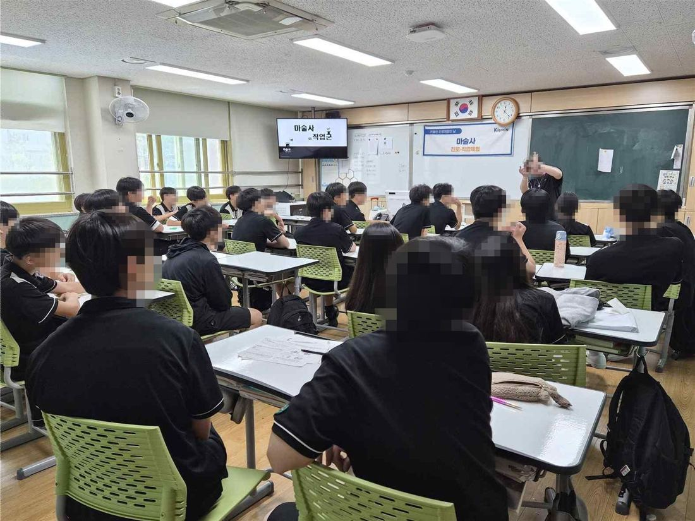
채점세 가지 채점 요소
에듀테크로 푼 수행평가의 두 딜레마
성취기준 [9음03-02]의 ‘조사하여’와 ‘발표한다’를 모두 지키려 하자 현장에서 두 가지 딜레마가 생겼다. 둘 다 자체 개발 플랫폼으로 해결하였다.
타당성웹 기반 수집의 신뢰성을 지키는 장치
| 확보 요소 | 조치 |
|---|---|
| 본인 확인 | 학교 계정 로그인 후 명렬표의 학번·이름과 대조, 한 번 확인된 계정은 학번에 고정해 대리 작성을 차단 |
| 수행 시각 | 작성·제출 시각을 서버 기준으로 기록 — 학생 기기의 시계를 조작해도 반영되지 않음 |
| 채점 일관성 | 채점기준표를 사전 공개하고 수집 항목을 채점 요소와 1:1로 배열 |
| 자료 보존 | 원본과 항목별 정리본으로 이중 보관, 규정 기간 동안 보존 |
발표모둠 내 발표 방식
- 4~5명 모둠 안에서 1인 1분 발표 + 30초 질의응답 → 한 모둠 약 8분, 전 학급 25분 안에 완료
- 교사는 모둠을 순회하며 발표를 관찰·기록하고, 듣는 학생은 태블릿으로 동료 평가 입력
- 동료 평가는 성적에 반영하지 않고 발표 실시 확인과 관찰 보조 자료로만 활용 — 중학생 동료 평가는 친소 관계의 영향을 받기 쉬움
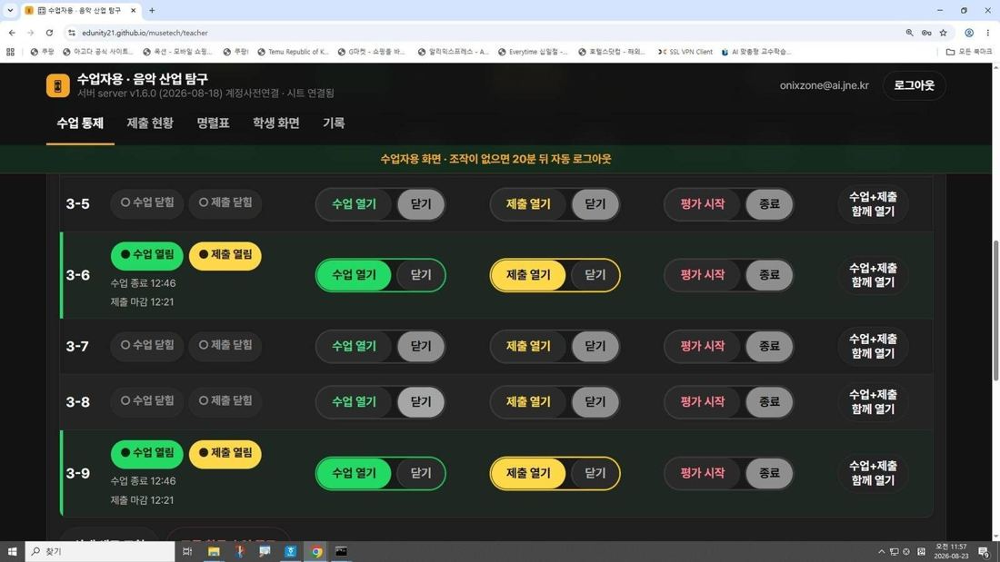
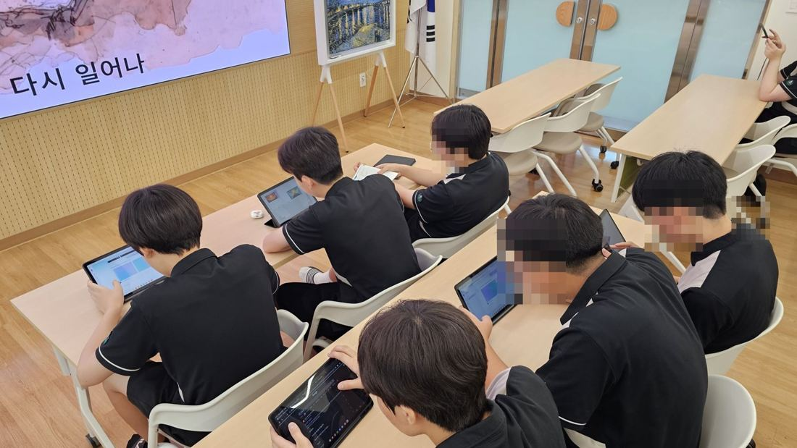
계기교육을 ‘듣는 시간’에서 ‘만드는 시간’으로
계기교육의 목표가 ‘알게 하는 것’이 아니라 ‘하게 하는 것’이라면, 캠페인송은 그 목표에 가장 가까운 형식이다. 주제는 해마다 바뀌지만 묻다 → 찾다 → 빚다 → 나누다의 절차는 바뀌지 않는다.
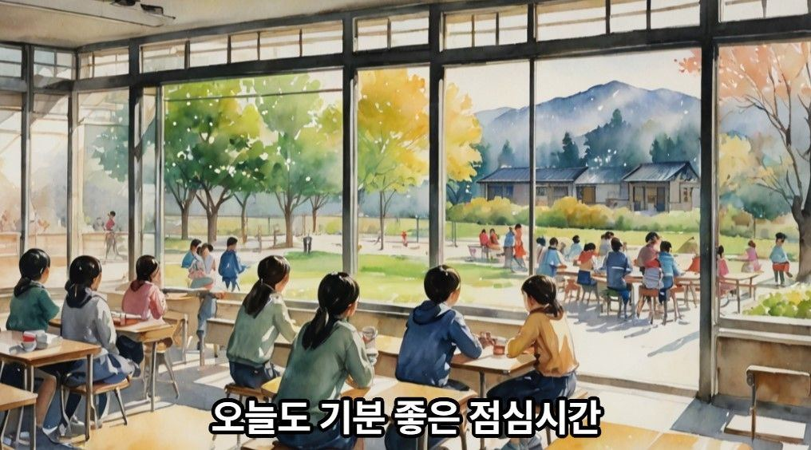
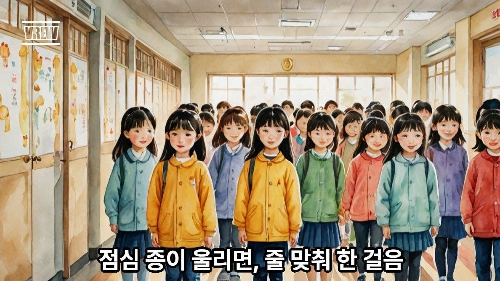
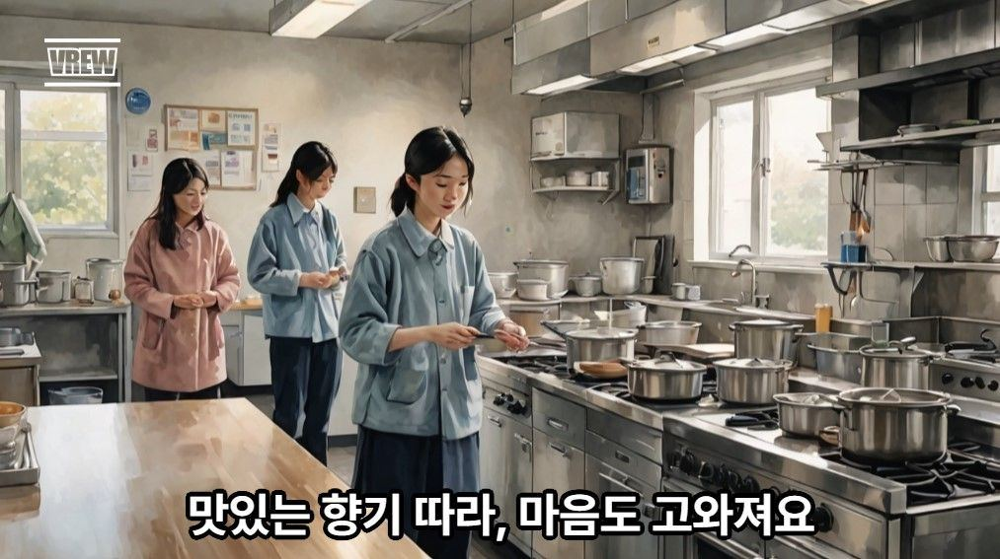
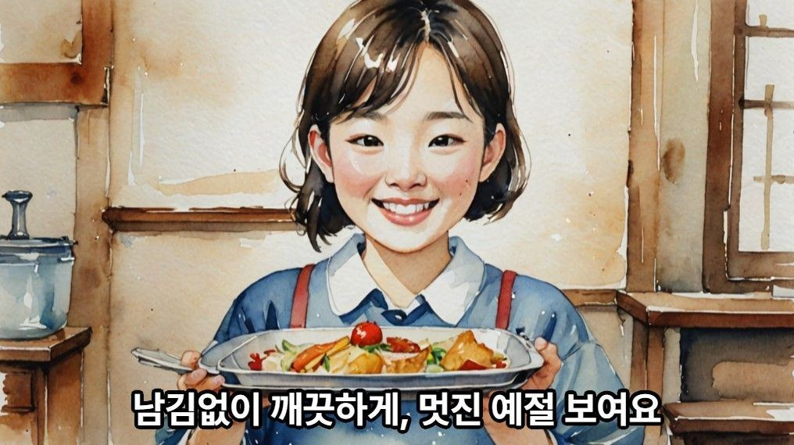
웃음나게, 예쁘게 나눠요
우리의 식탁, 배려로 채워요
오늘도 기분 좋은 점심시간
- 9일이면 한 주제가 한 곡 — 메시지 찾기부터 리릭 비디오까지 한 곡의 공정이 「맛있는 질서송」 한 편으로 모두 보인다.
- 실제 청중 — 급식실 QR 게시와 교내 방송으로 전교생에게 송출하였다.
- 연간 8주제 — 인권 존중, 통일, 급식 문화 등 계기교육 메시지를 시의 언어와 노래로 옮겼다.
통일교육통일노래 「판문열차」 — AI 영상과 결합한 계기교육
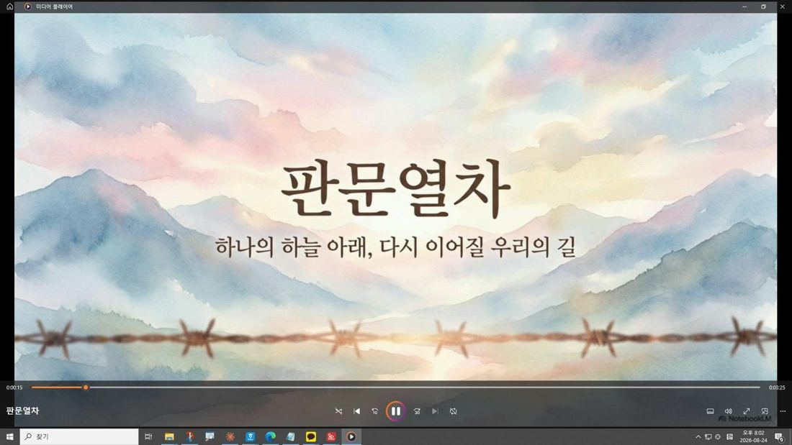
판문열차 · 판문역
창작한 통일노래에 AI 생성 영상을 결합하는 계기교육 수업을 운영하였다. 같은 곡을 대학가요제풍·남성 보컬 등 여러 버전으로 만들어(2025. 12.~2026. 1.) 편곡에 따라 메시지의 온도가 달라지는 것을 비교하게 하였다.
인권 존중 캠페인송
1차 공개수업 지도안에는 학교자율시간 성취기준 [9공-01-02]와 연계한 인권 존중 캠페인송 만들기 45분 수업(가사 작성 10′ → Claude 리릭 플레이어 7′ → 모둠 발표 7′)을 함께 실었다.
시의 문형을 빌려 자기 말을 갈아 끼우다
원시는 김영랑의 「돌담에 속삭이는 햇발같이」. 학생은 시 전체를 옮기지 않고 문형만 가져온다. 모방시 짓기 → 리릭 비디오로 이어진 결과가 「달빛이 품에 안은 노랫말」이다.
| 원시에서 뽑아낸 문형 | 학생이 갈아 끼운 자리 | 완성한 모방시(8행) |
|---|---|---|
| ［장소］에 ［움직임］는 ［자연물］같이 | 돌담 → 저녁 / 햇발 → 노을 | 저녁에 물드오는 노을같이 |
| ［장소］ ［위치］ ［움직임］는 ［자연물］같이 | 풀 아래 → 바람 / 샘물 → 꽃잎 | 바람에 속삭이는 꽃잎같이 |
| 내 마음 ［부사］ ［관형어］ ［길］ 위에 | 고요히 → 포근히 / 고운 봄 길 → 잠든 꿈길 | 내 마음 포근히 잠든 꿈길 위에 |
| ［대상］을 ［동사］고 싶다 | 하늘을 우러르고 → 별 하나 내려앉고 | 별 하나 살며시 내려앉고 싶다 |
| ［사람］의 ［신체］에 ［피어나는］ ［감정］같이 | 새악시 볼 → 소녀의 눈 / 부끄럼 → 수줍음 | 소녀의 눈에 피는 수줍음같이 |
| ［추상］의 ［신체］ ［동사］는 ［자연물］같이 | 시의 가슴 → 달빛의 품 / 물결 → 노랫말 | 달빛이 품에 안은 노랫말같이 ← 제목이 된 행 |
| ［색·질감］ ［소재］ ［얇게 흐르는］ | 보드레한 에메랄드 → 은은한 푸른 숨결 | 은은한 푸른 숨결 가만히 흐르는 |
| ［공간］을 ［동사］고 싶다 | 실비단 하늘을 바라보고 → 꿈길 속 하늘 품에 들고 | 꿈길 속 하늘 품에 들고 싶다 |
원시와 모방시를 한 화면에서 이어 재생하므로, 무엇을 빌리고 무엇을 바꾸었는지가 눈으로 선명하게 확인된다. 시는 인문학과 음악을 잇는 매체이자, 창작 이전의 “무엇을 말할까”를 풀어 주는 열쇠로 작동하였다.
풀 아래 웃음짓는 샘물같이
내 마음 고요히 고운 봄 길 위에
오늘 하루 하늘을 우러르고 싶다
새악시 볼에 떠오는 부끄럼같이
시의 가슴에 살포시 젖는 물결같이
보드레한 에메랄드 얇게 흐르는
실비단 하늘을 바라보고 싶다
바람에 속삭이는 꽃잎같이
내 마음 포근히 잠든 꿈길 위에
별 하나 살며시 내려앉고 싶다
소녀의 눈에 피는 수줍음같이
달빛이 품에 안은 노랫말같이
은은한 푸른 숨결 가만히 흐르는
꿈길 속 하늘 품에 들고 싶다
학교의 일상을 노래로 — 수업 예시곡 만들기
학생들이 직접 겪는 학교생활을 가사로 쓴 노래를 교사가 만들어 수업 예시곡으로 썼다. 낯선 대중가요보다 ‘우리 학교 이야기’가 창작의 문턱을 훨씬 낮춘다.
배구 코트 위에 준우승 트로피 / 육상 트랙 위엔 내 두 다리 있어
승평의 아침은 이렇게 채워져 / 남들보다 조금 먼저, 우리답게
| 노래 | 소재와 활용 | 제작 |
|---|---|---|
| 순천승평중 교가 (기존·디지털·인디밴드) | 같은 교가를 세 가지 편곡으로 들려주며 편곡이 주는 인상의 차이를 감상 | 2026. 1. 2. |
| 안녕, 나의 승평 | 학교를 떠나는 3학년의 마음을 담은 노래 · 남성 보컬판 포함 | 2026. 1. 2.~5. |
| 중3의 하루 · 열다섯의 하루 | 승평지킴이·선도부·배구 준우승·육상·밴드부 등 실제 학교생활을 가사화, 리릭 플레이어 제작 | 2026. 6.~7. |
| 승평의 아침 (남·여 보컬) | 아침 운동장과 교문 앞 질서 지킴이 장면 · 수채화 스토리보드 3부작 | 2026. 7. 8. |
기획노래 한 곡을 영상으로 만드는 교사의 기획 과정
교실 밖의 실제 청중 — 무대·방송·QR
완성한 작품은 학급 안에서 소비되고 끝나지 않도록 실제 청중을 만나게 하였다. 점심시간 소축제는 학생들이 기획하고 운영한 공연으로, 전교생이 관객이 되었다.
무대
방송
QR · 아카이브
상용 영상 플랫폼은 계정·개인정보·저작권 부담과 학교 방화벽 문제가 반복되었다. 그래서 설치와 계정 없이 어느 기기에서나 재생되는 단일 파일 리릭 플레이어를 직접 만들어 QR 하나로 배포하였다. 공유 방식까지 수업 설계에 포함한 것이 「로그인하다」의 실체이다.
숫자로 본 변화 — 다섯 영역 모두 유의하게 상승
3학년 9개 학급 전수를 대상으로 사전(2026. 3., N=192)과 사후(2026. 7.~8., N=191)에 5점 척도 설문을 실시하고, 독립표본 Welch t-검정과 효과 크기(Cohen’s d)로 분석하였다.
| 영역 | 사전 | 사후 | 상승 | t | d |
|---|---|---|---|---|---|
| 창작 역량 | 2.57 | 3.28 | ▲0.71 | 6.876*** | 0.70 |
| AI 주도 활용 | 2.78 | 3.31 | ▲0.53 | 4.903*** | 0.50 |
| 분석·감상 | 2.78 | 3.27 | ▲0.48 | 4.893*** | 0.50 |
| 자기 이해 | 3.00 | 3.28 | ▲0.28 | 2.668** | 0.27 |
| 협업·피드백 | 3.02 | 3.28 | ▲0.26 | 2.600** | 0.27 |
가설 ② AI 주도 활용과 분석·감상의 동반 향상 → 지지
가설 ③ 다른 학교에서의 재현 → 2학기 검증 중(→ 50쪽)
결과
사전 설문에서 가장 낮았던 ‘창작 역량’(2.57)에서 가장 가파른 상승(▲0.71, d=0.70)이 나타났고, 사전에 이미 가장 높았던 자기 이해(3.00)·협업(3.02)은 상승 폭이 가장 작았다(d=0.27).
해석
프로그램이 모든 영역을 고르게 끌어올린 것이 아니라, 실태 진단이 겨눈 지점을 수업 설계가 정확하게 움직였다. 진단과 실천과제가 맞물렸음을 보여 주는 결과이다.
효과 크기는 Cohen의 기준으로 창작 역량이 ‘중간’(0.70), 나머지 네 영역이 ‘작음~중간’(0.27~0.50) 수준이다. 사후 조사가 무기명이어서 대응표본 검정은 할 수 없었고, 이 제약을 보완하기 위해 서술형 응답 코딩과 산출물 대조 분석을 병행하였다(→ 37쪽).
문항으로 본 사후 응답과 검증의 투명성
사후 설문 9문항의 긍정 응답률은 31.9~36.6% 사이에 고르게 분포하였다. 사전 최하위 문항(가사 창작 11.5%)에 대응하는 사후 문항 ⑤는 36.1%였다.
분포의 특징
정직성검증 과정에서 지킨 원칙
분석 대상의 확정
설문의 재설계
한계의 명시
학생의 목소리에 나타난 질적 변화
사후 서술형 응답을 키워드 코딩 → 범주화 → 대표 인용의 3단계로 분석하고, 프롬프트 원본과 수정본을 대조해 사고 과정의 변화를 확인하였다.
변화산출물과 기록에 나타난 초기 → 후반의 변화
| 관찰 지점 | 초기 | 후반 |
|---|---|---|
| 프롬프트 | “슬픈 노래 만들어 줘” 같은 단일 요청 | 역할·상황·금지어·음악 장치를 칸별로 담은 다층 프롬프트 |
| 수용 태도 | 첫 생성물을 그대로 제출 | 2회 이상 재생성하고 선택 근거를 음악 용어로 진술 |
| 가사 | 누구에게나 해당되는 상투적 표현(청춘·꿈·빛나는 내일) | 자기 장면이 절에, 자신을 향한 메시지가 후렴에 배치 |
| 공유 | 희망자만 소극적으로 공유 | 포스트잇 응원, 소축제·방송·QR로 교실 밖 청중과 공유 |
교사 수준에서 확인된 성과
- 참관 협의에서 ‘수정 이력’을 평가 증거로 삼는 방식이 표절·대리 작성에 대한 실질적 대응으로 평가받았다.
- 백워드 설계 목표 진술 양식은 연구회 공동 개발 자료의 공통 양식으로 자리 잡았다.
- 수행 결과가 학생 개별 세부능력 및 특기사항 기록으로 이어져 수업·평가·기록의 일체화를 이루었다.
설치도 가입도 없이,
수업 시간 안에서 완결되는 도구
수업에서 부딪힌 문제를 기다리지 않고 직접 도구로 풀었다. 과제형 수행평가 금지, 265명의 발표 기회, 모둠 활동의 무임승차, 상용 영상 플랫폼의 계정·방화벽 문제가 그 출발점이었다.
모든 플랫폼은 전남 학생 공통 계정(@ai.jne.kr)으로 로그인하고, 설치도 회원가입도 필요 없으며, 설정 파일 한 곳만 고치면 다른 학교에서도 그대로 돌아가도록 설계하였다.
2026년에 만든 여덟 개의 웹 플랫폼
수업용 4종, 연구회·연구 공유용 3종, 학교 공유용 1종이다. 모두 GitHub Pages(edunity21.github.io)에 공개되어 있고, QR로 바로 연결된다.
공통 설계 — 정적 페이지 + 학교 계정 + 시트 서버
모든 수업 플랫폼은 같은 뼈대를 공유한다. 학생은 태블릿에서 주소 하나로 들어오고, 교사는 다른 주소의 콘솔에서 수업을 통제한다. 서버와 저장소는 학교 구글 계정 안에서 운영되어 별도의 비용이 들지 않는다.
원칙다섯 가지 설계 원칙
재사용한 번 만든 부품을 다음 플랫폼에
- 구글 클라우드 프로젝트와 클라이언트 ID는 진달래꽃 플랫폼 때 만든 것을 재사용 — 승인된 원본이 도메인 단위라 경로가 달라도 통한다.
- 음악 산업 탐구의 common.js(서버 통신·로그인·저장소)를 MUSICALINUS가 그대로 물려받아, 학생들은 로그인·명렬표·수업 통제 방식을 새로 배울 필요가 없었다.
- 설치는 README의 7~8단계마다 [확인] 기준을 두어 다른 교사도 따라 할 수 있게 하였다.
수업 시간 안에서만 열리는 두 개의 자물쇠
과제형 수행평가 금지 원칙을 기술로 지키기 위해 ‘입장’과 ‘제출’을 따로 잠그는 구조를 만들었다. 헷갈리기 쉬운 지점이라 설치 안내서 맨 앞에 표로 정리하였다.
| 입장 | 제출 | |
|---|---|---|
| 무엇을 막나 | 로그인 자체 | [지금 제출하기] 단추 |
| 닫히면 학생은 | 화면에 들어오지 못함 | 들어와 쓸 수는 있으나 낼 수 없음 |
| 닫히면 서버 저장은 | 멈춤(기기에는 남음) | 계속됨 |
| 언제 여나 | 수업 시작할 때 | 조사를 시작할 때(마지막 차시) |
입장이 닫히면 제출도 자동으로 닫힌다. 반대는 아니다. 1차시처럼 ‘들어와 쓰기만 하고 내지는 않는’ 시간이 있기 때문이다. 집에서 이어 쓴 내용은 서버에 남지 않으므로 과제형 수행평가 금지 요건을 충족한다.
본인 확인대리 작성을 막는 다섯 겹의 확인
- 도메인 — @ai.jne.kr 계정이 아니면 거부(DOMAIN_DENIED)
- 명렬표 — 학번이 명렬표에 없으면 거부(NOT_IN_ROSTER)
- 이름 대조 — 학번과 이름이 맞지 않으면 거부(NAME_MISMATCH)
- 비밀번호 — 5번 틀리면 5분 잠금(WRONG_PASSWORD)
- 계정 고정 — 한 번 확인된 계정은 그 학번에 고정, 남의 학번으로 들어오려 하면 거부(ACCOUNT_MISMATCH)
거부된 시도는 모두 서버의 ‘로그’ 시트에 사유와 함께 남는다. 학번 네 자리의 두 번째 자리로 반을 자동 판별한다(3301 → 3학년 3반 1번).
교사 콘솔학급 줄마다 단추 하나로
| 단추 | 하는 일 |
|---|---|
| [수업만] | 50분 입장 허용, 제출은 닫힘 |
| [수업+제출 열기] | 입장과 제출을 함께 연다 |
| [제출 열기] | 25분 제출 허용 |
| [종료] | 입장·제출을 모두 닫는다 |
| [다시 열어 주기] | 결시자·특정 모둠만 재작성 허용 |
수업 전 점검
기록의 신뢰성
학급 간 공정성
한 명이 다 하고 나머지는 구경하는 일이 구조적으로 막히는 제작소
2학기 WE 프로젝트를 위해 만든 학급 뮤지컬 공동 창작 플랫폼이다. 여섯 모둠이 각각 한 막(대사 + 넘버 하나)을 맡고, 다섯 명이 서로 다른 칸을 채우면 서버가 하나의 막으로 합쳐 준다.
| 제작 역할 | 채우는 칸 |
|---|---|
| 대본 리더 | 막 제목 · 시간대 · 무대 배경 · 장면 이름 · 한 줄 줄거리 · 지문 · 대사 순서 |
| 작사 리더 | 넘버 제목 · 가사(파트 배분 포함) |
| 작곡 리더 | Suno 프롬프트 네 칸 — Genre · Mood · Instruments · Vocal Structure |
| 편곡 리더 | 넘버 구성(전주–벌스–후렴) · 데모 A/B 비교와 선택 이유 |
| 발표 리더 | 배역 배정 · 연출 노트 · 최종 제출 |
권한칸 단위 권한 — 내 칸만 보낸다
배역별 대사 권한
충돌 없는 공동 작업
자리 배정
예시빈 화면 앞에서 멈추지 않도록 — 생각 열기와 예시 보기
담당 칸마다 그 역할이 스스로에게 던질 질문 세 개(생각 열기)와 그 모둠이 맡은 바로 그 막의 예시(📖 예시 보기)를 붙였다. [이대로 넣어 보기]를 누르면 칸이 곧바로 채워지고, 그 자리에서 고쳐 쓰면 된다.
무임승차는 제출 단계에서 걸린다 — 완성 검사 11항목
제출은 발표 리더만 누를 수 있고, 완성 검사 열한 항목이 모두 초록불이어야 넘어간다. 학생 화면이 먼저 검사하고 서버가 한 번 더 검사한다.
| 항목 | 최소 | 왜 |
|---|---|---|
| 막 제목 | 2자 | |
| 무대 배경 | 30자 | 관객이 무대를 그릴 수 있어야 |
| 배역 배정 | 3명 | 인물이 셋은 있어야 장면이 된다 |
| 장면 지문 | 2줄 | 대사만 있으면 대본이 아니다 |
| 대사 | 12줄 | |
| 넘버 제목 | 2자 | |
| 가사 | 8줄 | 벌스 한 덩어리 + 후렴 한 덩어리 |
| Suno 프롬프트 | 4칸 모두 | |
| 넘버 구성 | 10자 | |
| 연출 노트 | 20자 | |
| 모둠원 참여 | 전원 | 한 줄도 안 쓴 사람이 있으면 제출이 막힌다 |
파일만든 것을 그 자리에서 낸다
| 무엇 | 방식 | 한도 |
|---|---|---|
| 음원(mp3·m4a·wav) | 플랫폼에서 바로 | 18MB · 모둠당 12개 |
| 그림(포스터·스케치) | 플랫폼에서 바로 | 위와 같음 |
| 동영상(리릭 비디오·공연) | [영상 내기] → 구글 폼 | 파일당 1GB |
파일은 교사 드라이브의 「MUSICALINUS 제출 / 학급 / 모둠」 폴더에 쌓인다. 구글이 파일 업로드 문항이 있는 폼을 화면에 끼워 넣지 못하게 막아 두었기 때문에 동영상만 새 창으로 열고, 학급·모둠·학번·이름은 미리 채워 학생은 파일만 고르면 되게 하였다.
합본6차시 — 한 편의 대본으로
교사용 [합본 대본] 탭에서 학급을 고르면 여섯 막이 표지·등장인물·수록 넘버와 함께 한 편의 대본으로 이어져 인쇄·PDF로 나온다.
이력첫 운영에서 배우고 고친 것
기술적으로 지킨 것
· LockService로 읽기–수정–쓰기 구간을 직렬화하고 버전 번호를 올려 충돌을 막음
· 코드를 고칠 때 ?v= 캐시 꼬리표를 함께 올려 교실 태블릿이 새 파일을 받게 함
1분 발표를 앱 안에서 바로 녹화해 낸다
음악 산업 탐구 수행평가의 3차시 발표를, 현장 발표 대신 학생이 태블릿으로 자기 발표를 찍어 제출하는 방식으로 바꾸었다. 카메라 앱이 아니라 플랫폼 안에서 녹화하고, 영상은 교사 드라이브에 학급별로 모인다.
설정얼굴과 목소리만 알아보면 되는 영상
| 항목 | 기본값 | 이유 |
|---|---|---|
| 녹화 시간 | 60초 | 채점기준의 발표 시간(50초~1분) |
| 화면 크기 | 640 × 480 | 태블릿 부담 최소화 |
| 초당 자료량 | 600,000bps | 1분 ≒ 4.5MB |
| 전송 | 조각별 최대 3회 재시도 | 교실 와이파이 끊김 대비 |
수치를 900,000으로 올리면 또렷해지는 대신 용량이 1.5배가 되고, 400,000으로 내리면 가벼워지는 대신 흐려진다. 교사가 config.js 아래쪽 네 줄만 고치면 바뀐다.
설치드라이브 권한까지 8단계
구글 클라우드 클라이언트 ID → 스프레드시트·Apps Script 서버 → config.js → 깃허브 업로드 → 원본 등록 → 명렬표(265명) → 수업 전 점검 → 발표 영상 켜기(Video.gs, 드라이브 권한, 버전만 올리는 새 배포). 각 단계 끝의 [확인]이 통과하면 다음으로 넘어간다.
학생 경험
사전 점검 페이지
기종 차이 흡수
감상·편성·공유를 돕는 작은 플랫폼들
규모는 작지만 수업과 학교생활의 빈틈을 메운 플랫폼들이다. 같은 계정·같은 설계 원칙을 따르기 때문에 학생들이 따로 배울 것이 없다.
진달래꽃 × 서양음악사
edunity21.github.io/azalea
애상 조편성
edunity21.github.io/aesang
승평 아카이브
edunity21.github.io/archive
연구 공유보고서를 ‘웹 플랫폼’으로 다시 짓다
시나브로 넷
edunity21.github.io/sinabro
오작교 웹
edunity21.github.io/ojakgyo
DFMR 홈페이지
edunity21.github.io/DFMR
설치도 계정도 없이 — 단일 파일 리릭 비디오 플레이어
학생 작품을 공유할 때마다 상용 영상 플랫폼의 계정·개인정보·저작권 부담과 학교 방화벽 문제가 반복되었다. 음원·가사·이미지를 브라우저에서 동기화해 재생하는 HTML 파일 하나를 만들어 QR로 배포하였다.
구조학생이 만드는 것은 파일 세 개
| 만드는 것 | 무엇인가 | 왜 |
|---|---|---|
| ① 싱크 데이터 | 가사 한 줄 + 등장 시각(초) + 붙일 이미지 | 초 단위로 맞추는 동안 곡 구조를 다시 듣는다(숨은 감상 활동) |
| ② 이미지 세트 | 가사 줄 수만큼의 장면 그림 | 가사를 시각 언어로 옮기는 훈련 — 미술·국어 연계 |
| ③ 단일 HTML | 음원·가사·이미지를 내장한 파일 1개 | QR 하나로 급식실·복도·가정에서 즉시 재생 |
사양제작 프롬프트 템플릿에 담은 기능
| 제작한 플레이어 | 용도 | 시기 |
|---|---|---|
| 우리가 그리는 미래의 소리 | DFMR 연구회 시그니처송 · 연수 오프닝 | 7. 8. |
| 중3의 하루 · 승평의 아침(남·여) | 수업 예시곡 · 학생 작품 모델 | 7. 7.~8. |
| 맛있는 질서송 | 급식문화 캠페인 · 급식실 QR | 7. 7. |
| 달빛이 품에 안은 노랫말 | 모방시 리릭 비디오 · 모바일판 | 5. 25. |
“사용자가 브라우저에서 직접 로컬 오디오와 이미지를 선택하면 Blob URL 방식으로 실시간 바인딩하라”는 지시를 함께 쓰면 서버 없이도 싱크를 맞출 수 있다는 운영 팁을 참관 교사 자료에 실어 다른 교사도 따라 만들 수 있게 하였다.
설정 두 줄만 고치면 다른 학교도 그대로
본 연구의 산출물은 ‘읽고 이해해야 하는 보고서’가 아니라 ‘내려받아 바로 쓰는 자료’를 지향하였다. 같은 계정 체계를 쓰는 도내 학교라면 허용 도메인과 학교·학급 정보만 바꾸어 즉시 같은 환경을 쓸 수 있다.
const CLASSES = ['3-1', … '3-9'];
조건확산을 막는 네 가지와 설계 단계의 해법
| 확산을 막는 것 | 설계로 푼 방법 |
|---|---|
| 상용 서비스의 계정·요금 종속 | 교육청 계정 + 무료 정적 호스팅 + 학교 구글 계정 서버 |
| 학교 방화벽 환경 | 설치 없는 웹 페이지와 단일 파일 플레이어 |
| 수업자 개인 역량 의존 | 단계마다 [확인]이 있는 설치 안내서, 절차로 기술한 카드·루브릭 |
| 서비스 기능·정책 변화 | 일반화의 단위를 도구 조작법이 아니라 ‘절차’로 설정 |
기술사용한 기술
방식바이브 코딩으로 만든 교사의 도구
교사가 수업의 문제를 문장으로 정의하고 생성형 AI와 대화하며 코드를 완성하는 방식으로 개발하였다. 설계 결정과 남은 일은 인수인계 문서에 정리해 다음 작업에 이어 붙였고, 배포본과 저장 폴더의 차이를 매번 확인하는 습관을 운영 원칙으로 삼았다.
다음 단계 ①
다음 단계 ②
제언
연표2026년 플랫폼 개발 연표
하나의 교실, 세 개의 질문,
세 편의 연구보고서
같은 해의 실천을 세 개의 렌즈로 들여다보았다. 스마트교육은 AI·에듀테크를 어떻게 설계했는가를, 학교예술교육은 학생의 예술적 성장이 어떻게 일어났는가를, 진로교육은 학교의 진로활동이 학생 안에서 어떻게 이어지는가를 물었다.
세 보고서는 모두 ‘장벽 하나에 실천과제 하나’, ‘단계마다 남는 증거’, ‘도구가 아니라 절차로 하는 일반화’라는 같은 설계 언어로 쓰였다. 수치는 원자료를 다시 셈하여 확인하고, 실시한 것과 계획한 것을 구분해 적었다.
한 해의 실천, 세 편의 연구보고서
2026년에는 세 개의 도 단위 실천사례 연구대회에 보고서를 냈다. 앞의 두 편은 음악 수업 실천을 서로 다른 관점으로, 세 번째 편은 학교 진로활동을 연구 대상으로 삼았다.
| BRIDGE-AI | 시나브로 | 오작교 | |
|---|---|---|---|
| 연구대회 | 2026 스마트교육 실천사례 연구대회 전남교육청창의융합교육원 | 2026 학교예술교육 실천사례 연구대회 | 2026 진로교육 실천사례 연구대회 |
| 보고서 제목 | AI로 연결하고, 예술로 실천하며, 진로로 성장하는 BRIDGE-AI 스마트교육 | 시의 품에 안긴 나, 브레인 AI와 로그인하다 : 시나브로 프로젝트 | 오늘을 짓는(作) 다리 — 오작교 프로젝트 |
| 모형·실천과제 | BRIDGE ① 시도하다 ② 설명하다 ③ 탐색하다 ④ 공유하다 | 詩 시의 품에 안기다 · 나 나를 노래하다 · 브 브레인 AI와 협력하다 · 로 세상에 로그인하다 + 확산 | 오 오늘의 나를 만나다 · 작 나의 진로를 짓다 · 교 사람과 세상에 다리를 놓다 + 다음 다리 |
| 공통 절차 | 시도 → 설명 → 탐색 → 공유 | 묻다 → 찾다 → 빚다 → 나누다 | 묻다 → 해 보다 → 짓다 → 잇다 |
| 대상·범위 | 3학년 9개 학급 265명, 성취기준 4개 24차시 | 같은 학생·같은 차시를 예술교육 관점으로 재구성 | 1~3학년 학교 진로활동(검사·체험·캠프·멘토링) |
| 검증 방법 | 사전(192)·사후(191) Welch t-검정, 효과 크기, 서술형 코딩 | 같은 설문 + 과정중심 루브릭 + 산출물 대조 | 설문 3종 빈도 재검산(긍정률·평균), 소감 범주 분석 |
| 핵심 결과 | 다섯 영역 모두 유의한 상승, 창작 역량 d=0.70 | 최하위 창작 역량이 가장 크게 성장, 선택·수정·설명이 학습 증거가 됨 | 강사 평가가 진로 도움 인식보다 늘 높은 ‘틈’ 확인 → 기록지·질문 카드 제안 |
| 제출 현황 | 보고서 제출(9. 18. 기한) · 10월 1차 심사, 10. 22. 발표 심사 예정 | 제출용 창A안 완성(10. 5.) · 2차 심사 5분 발표 준비 | 편집본 본문 20쪽 + 부록 20쪽 완성(10. 1.) |
공통세 보고서를 관통하는 설계 언어
장벽 하나에 과제 하나
단계마다 남는 증거
절차로 하는 일반화
세 개의 장벽에 네 개의 다리를 놓다
스마트교육 실천사례 연구대회 출품작이다. 2026년 3월 3학년 192명의 사전 조사에서 확인한 세 개의 장벽을 넘기 위해 네 개의 실천 다리, 「BRIDGE-AI」를 설계하였다.
물음연구 문제와 가설
대회연구대회 개요
| 항목 | 내용 |
|---|---|
| 주관 | 전남교육청창의융합교육원 교육정보부 |
| 안내 | 순천승평중-2987(2026. 4. 6. 접수) |
| 계획서 | 4. 7.~8. 작성 · 출품서약서 제출 |
| 보고서 | 9. 18.(금) 17:00까지 · 본문 20쪽 + 부록 |
| 심사 | 1차 서면 60% + 2차 발표 40% |
| 배점 | 계획·전략 30 · 내용·방법 30 · 일반화 40 |
| 요건 | 표절률 10% 미만(표절검사 안내 첨부) |
| 등급 | 1등급 2 · 2등급 4 · 3등급 6(제출자 40% 이내) |
설계장벽 → 다리 → 남는 증거
음악 에세이 · ME 포트폴리오
원본·수정본 · 선택 근거 진술
분야 조사 활동지 · 1분 발표
공개 무대 기록 · QR 아카이브
성취기준 재구성, 연구회 사전 모임(5. 13.)에서 수업안·활동지·루브릭 공동 검토
ME 프로젝트 9개 학급 적용, 도단위 1차 공개수업(7. 10.), 협의 의견 반영
WE 프로젝트 운영, 2차 공개수업(11. 20.), 일반화 자료집 배포 예정
AI로 시도하고, 설명하고, 탐색하고, 공유하는 수업 모형
네 개의 다리마다 학생 활동, 에듀테크, 남는 산출물을 1:1로 대응시켰다. 도구는 맨 뒤에 두어 기술이 목표를 잠식하지 않게 하였다.
(산출물)
선행선행 사례에서 가져온 네 가지 적용 포인트
| 영역 | 선행 사례에서 확인한 것 | 이 연구의 적용 |
|---|---|---|
| 스마트교육·에듀테크 | 도구와 역량의 1:1 대응 설계, 실천과제의 병렬 배치 | 만족도 비율에 더해 t-검정과 효과 크기로 변화의 크기를 확인 |
| 음악과 창작수업 | 단계형 창작 모형과 과정중심 평가 루브릭 | 연주 기능을 전제하지 않는 창작 경로로 실기 부담 없이 참여 |
| 생성형 AI 활용수업 | 짧은 시간에도 완성도 있는 산출물이 나오는 차시 구성 | 여러 번 고쳐 쓰는 절차를 넣고 ‘수정 이력’을 평가 증거로 활용 |
| 진로연계 교과수업 | 교과 내용이 직업 세계와 닿는 주제 중심 재구성 | 음악 산업 12개 분야를 학생이 직접 조사·발표하도록 전 학급 적용 |
백워드로 설계하고, 배점의 40%를 ‘고른 이유’에 두다
무엇을 확인할지 먼저 정한 다음 수업을 계획하였다. 성취기준에서 핵심 질문을 뽑고, 그 질문에 답했다는 증거를 정한 뒤, 마지막에 도구를 골랐다.
바라는 결과
“지금 나를 가장 잘 표현하는 음악은?”
“왜 1번이 아니라 2번을 골랐는가?”
수용 가능한 증거
학습 경험 계획
평가네 영역, 과정 중심 배점
이유왜 40%인가
생성형 AI 수업에서 가장 먼저 부딪히는 물음은 “이 결과물이 정말 이 학생의 것인가?”이다. 완성된 곡만 봐서는 스스로 만든 학생과 남에게 맡긴 학생을 구별할 수 없다.
그래서 채점 대상을 결과물에서 ‘과정의 기록’으로 옮기고, 과정이 비어 있으면 상위 수준을 받을 수 없도록 루브릭을 설계하였다. 루브릭은 프로젝트 시작 시점에 학생에게 공개하여 평가가 곧 학습의 안내가 되게 하였다.
기록으로의 환류
연구회와 연수로의 연결
공개학생이 처음부터 손에 쥐는 세 가지 도구
가설은 어떻게 확인되었나 — 진단이 겨눈 곳이 가장 크게 움직였다
다섯 영역 모두 유의하게 올랐지만, 오른 폭은 고르지 않았다. 사전 평균이 낮았던 영역일수록 상승 폭이 컸다. 실태 진단과 실천과제가 맞물렸다는 뜻이다(세부 수치 → 35쪽).
현장실제 수업에서 드러난 두 가지 문제와 해결
사례 1 · 역할 편중
사례 2 · 첫 결과 그대로 사용
한계연구의 제한점과 보완
단일 학년
독립표본
진행 중인 실천
읽는 보고서가 아니라 내려받아 바로 쓰는 자료로
우수 수업 사례가 확산되지 못하는 이유는 대개 네 가지다. 이 연구는 그 네 가지를 설계 단계에서 각각 풀어 두었다.
| 확산을 막는 원인 | 설계 단계의 해법 |
|---|---|
| 상용 서비스의 계정·요금에 종속된다 | 전남 학생 공통 계정(@ai.jne.kr)으로 로그인 · GitHub Pages와 학교 구글 계정으로 운영해 비용 0원 |
| 학교 방화벽 환경에서 열리지 않는다 | 정적 웹페이지와 단일 파일 HTML 플레이어 — 설치 없이 브라우저에서 재생 |
| 수업자 개인의 역량에 의존한다 | 프롬프트 카드·루브릭·활동지를 ‘절차’로 기술하고 연구회가 공동 검증 |
| 서비스의 기능·정책이 연구 중에도 바뀐다 | 일반화 단위를 도구 조작법이 아닌 절차로 — 도구가 바뀌면 카드 내용만 교체 |
적용학교급·교과별 적용 방안
| 대상 | 바꾸는 것 | 지키는 것 |
|---|---|---|
| 초등학교 | 창작 분량 30초 → 15초, 가사 대신 구호·라임, 모둠 4인 → 2인 | ‘정답 없음’ 원칙, 프롬프트 4단계, 저작권 3단 체크 |
| 고등학교 | 주제를 진로·사회 이슈로 넓히고 데이터 조사 비중 확대 | AI 통제 4단계 절차, 과정중심 루브릭 |
| 다른 교과 | 분석표를 교과 언어로 — 국어 문체·어조, 미술 색·구도, 정보 알고리즘·데이터, 진로 직업 가치 | 네 개의 다리, 프롬프트 4단계, 3단 체크리스트 |
경로네 겹의 확산 경로
제언일반화와 제도 개선을 위한 세 가지 제언
규모숫자로 본 실천과 확산의 범위
시의 품에 안긴 나, 브레인 AI와 로그인하다
학교예술교육 실천사례 연구대회 보고서이다. “AI가 30초 만에 노래를 만들어 주는 시대, 학교예술교육은 학생에게 무엇을 남기는가?”라는 물음에서 출발하였다.
순우리말 ‘시나브로’ 네 글자를 그대로 네 개의 실천과제로 삼았다. BRIDGE-AI와 같은 학생·같은 차시를 다루지만, 기술 설계보다 감상 → 자기 이해 → 창작 → AI 검증 → 공유 → 진로로 이어지는 예술적 성장의 흐름에 초점을 두었다. 특히 ‘말할 내용이 없다’는 창작 이전의 문제를 다루기 위해 詩 과제를 앞에 세웠다.
| 과제 | 넘는 장벽 | 핵심 활동 | 기르는 역량 |
|---|---|---|---|
| 詩 시의 품에 안기다 | 창작 이전의 문제 — 말할 내용이 없다 | 계기교육 메시지를 시의 언어로(연간 8주제), 「진달래꽃」 × 서양음악사 20개 양식 비교 감상 | 심미적 감성 · 문화적 이해 |
| 나 나를 노래하다 | 장벽 ① 표현 (M 2.31 · 11.5%) | RUPA 4단계 · 감정 태그 · 30초 소개, 「음악적 장치 분석표」 → 절·후렴 가사 쓰기 | 자기 이해 · 창의적 표현 |
| 브 브레인 AI와 협력하다 | 장벽 ② 검증 (M 2.78 · 24.5%) | 프롬프트 4칸 카드 · 2종 생성 비교, 고른 이유를 음악 용어로 기록 → 수정 이력 평가 | AI 리터러시 · 비판적 검증 |
| 로 세상에 로그인하다 | 장벽 ③ 연결 (M 2.73 · 21.9%) | 리릭 비디오 · 소축제 · 방송 · 급식실 QR · 버스킹, 음악 산업 12개 분야 탐구 · 모둠 뮤지컬 | 공동체·소통 · 진로 개척 |
| 확산 연구회로 로그인하다 | 한 교실에서 끝나지 않도록 | DFMR 연구회 조직·운영, 정기 협의회, 자체 연수, 도단위 공개수업 2회 | 교원 전문성 · 지역 일반화 |
렌즈같은 실천, 다른 렌즈 — BRIDGE-AI와 시나브로
| BRIDGE-AI (스마트교육) | 시나브로 (학교예술교육) | |
|---|---|---|
| 중심 물음 | AI·에듀테크를 수업에 어떻게 설계했는가 | AI 시대에 학교예술교육이 학생에게 무엇을 남기는가 |
| 첫 과제 | BRIDGE ① 시도하다 — 창작 경로 | 詩 시의 품에 안기다 — 말할 내용 찾기 |
| 강조점 | 도구와 역량의 1:1 대응, 플랫폼·통제 장치 | 감상 → 자기 이해 → 창작 → 공유로 이어지는 성장 |
| 확산 | BRIDGE ④ 공유하다 + 연구회 | ‘연구회로 로그인하다’를 독립 과제로 |
묻다 → 찾다 → 빚다 → 나누다, 네 번 되풀이되는 같은 걸음
네 개의 실천과제는 독립된 활동이 아니라 하나의 공통 절차를 공유한다. 어떤 계기교육 주제가 들어와도 학생은 묻고, 찾고, 빚고, 나눈다. 이 반복이 ‘시나브로’의 실체다.
9일, 한 주제, 한 곡
변수는 음악 하나
카드도 절차를 따른다
감상에서 적은 말이 창작의 명령어가 되다
학생이 감상하며 적은 표현이 그대로 AI 작곡 프롬프트의 값이 되도록 분석표를 설계하였다. 음악 시간에 배운 개념이 AI를 부리는 언어가 되는 지점이다.
| 분석 항목 | 학생이 적는 것 (감상) | 이 값이 하는 일 (창작) |
|---|---|---|
| 빠르기 · 박 | “느리고 박이 잘 안 느껴져요” (약 70 BPM) | Genre 칸의 BPM 수치가 된다 |
| 조성 · 화성 | “밝다가 후렴에서 살짝 어두워져요” | Mood 칸의 감정 형용사가 된다 |
| 악기 편성 | “처음엔 피아노만, 후렴에 드럼이 들어와요” | Instruments 칸의 악기 등장 순서가 된다 |
| 목소리 · 짜임새 | “한 명이 부르다 후렴에서 여럿이 겹쳐요” | Vocal Structure 칸의 파트 배분이 된다 |
평가과정중심 평가 루브릭 — 네 요소, 세 수준
| 평가 요소 | 상 (A) | 중 (B) | 하 (C) |
|---|---|---|---|
| 프롬프트 수정 이력 | 네 칸 중 세 칸 이상을 결과를 듣고 고쳤고, 칸마다 고친 이유가 서로 다르다 | 두 칸을 고쳤으나 고친 이유가 서로 겹친다 | 한 칸만 고쳤거나 고친 기록이 남아 있지 않다 |
| 선택 근거 진술 | 두 곡을 음악 용어(셈여림·짜임새·악기 편성)로 비교하고 선택 이유를 인과로 진술 | 비교는 했으나 “더 좋아서”처럼 느낌으로만 진술 | 비교 없이 한 곡만 제출 |
| 가사와 메시지 | 자기 장면이 절에, 주제 메시지가 후렴에 배치되어 둘이 한 곡 안에서 만난다 | 절과 후렴 중 한쪽만 확인된다 | 일반적 표현만 있고 자기 장면이 없다 |
| 공유와 윤리 | 저작권 3단 체크를 통과하고 실제 청중 앞에서 나누었다 | 체크는 했으나 공유가 교실 안에 머물렀다 | 점검 항목이 누락되었다 |
재구성시나브로의 성취기준 배열
| 성취기준 | 과제 | 차시 | 연계 |
|---|---|---|---|
| [9음02-02] 한 편의 시, 스무 개의 시대 | 詩 | 6 | 국어·역사·도덕 |
| [9음01-04] ME 프로젝트 — 나의 음악 에세이 | 나·브 | 8 | 국어·정보·미술 |
| [9음03-02] 음악으로 먹고사는 사람들 | 로 | 4 | 진로·정보 |
| [9음03-01] WE 프로젝트 — 우리 안의 뮤지컬 | 로(모둠) | 6 | 국어·창체 |
결과송폼에서 출발한 창작
‘로그인’의 두 방향 — 세상으로, 그리고 동료에게로
로(Log in)는 학생의 작품이 실제 청중에게 접속하는 일이자, 한 교사의 수업이 연구회의 동료에게 접속하는 일이다. 보고서는 이 두 방향을 결론과 제언에 함께 담았다.
결론네 가지 결론
제언개선을 위한 네 가지 제언
| 대상 | 제언 | 왜 필요한가 |
|---|---|---|
| ① 교과 수업 | 진로 교육을 별도 차시로 두지 말고 학생이 만든 결과물의 제작 공정을 분해해 제시 | 산출물이 있는 수업이라면 교과를 불문하고 진로탐색으로 전환할 수 있다 |
| ② 단위학교 | 학업성적관리규정에 ‘수업 중 온라인 제출 기록’을 정규 증빙으로 명시 | 제출 시각 자동 기록을 증빙으로 인정하는 근거 조항이 없다 |
| ③ 교육청 | 생성형 AI 도구의 연령 적합성·개인정보 처리 방침을 학기 단위로 검토해 목록 공고 | 교사의 역량은 도구 선정이 아니라 수업 설계에 쓰여야 한다 |
| ④ 연구회 | 산출물을 ‘내려받아 바로 도는 형식’으로 규정하고 교육청 플랫폼 탑재를 지원 | 교육청 에듀테크 플랫폼에 올려 도 전체의 자산으로 만든다 |
하루의 체험은 끝났다. 그 경험은 학생의 진로 어디에 남았는가?
진로교육 실천사례 연구대회 보고서이다. 학교가 이미 운영하는 검사·체험·캠프·멘토링을 ‘오늘(오)을 짓는(作) 다리(橋)’라는 하나의 흐름으로 엮어, 관계 기반 진로교육의 운영 모형과 개선 방향을 제시하였다.
2022 개정 교육과정에서 중학교 1학년의 한 학기는 자유학기로 운영되고, 2025학년도부터 고교학점제가 전면 시행되면서 중학생은 고등학교에서 배울 과목까지 진로와 이어 생각해야 한다. 본교도 1학년 1학기에 주제선택 85시간과 진로탐색 17시간, 모두 102시간의 자유학기 활동을 편성하였다.
그러나 활동이 많다고 경험이 쌓이는 것은 아니다. 학생은 체험에 즐겁게 참여하고도 무엇에 끌렸는지, 다음에 무엇을 알아볼지 말하기 어렵다. 검사·체험·캠프·멘토링의 기록이 행사마다 따로 돌아 한 학생의 경험을 잇는 다리가 보이지 않았다.
| 오작교의 세 가지 뜻 | |
|---|---|
| 만남의 다리 | 학생과 직업인·멘토·또래를 잇는 장 |
| 꿈의 다리 | 현재와 미래의 꿈을 잇는 진로 여정 |
| 오늘을 짓는 다리 | 매일의 경험과 관계를 쌓아 가는 성장 과정 |
진단연구자가 주목한 세 개의 끊긴 다리
| 구분 | 현장에서 보인 모습 | 놓아야 할 다리 | 실천과제 |
|---|---|---|---|
| 끊긴 다리 ① 경험 ↔ 나 | 체험은 즐거웠지만 무엇에 끌렸는지 말로 남지 않는다 | 해 본 일을 나의 흥미·강점의 근거로 바꾸는 기록 | 오 오늘의 나를 만나다 |
| 끊긴 다리 ② 정보 ↔ 설계 | 직업 정보를 받는 데서 멈추고 스스로 설계해 보는 경험이 적다 | 직업과 학과를 직접 짓고 선택의 이유를 세우는 활동 | 작(作) 나의 진로를 짓다 |
| 끊긴 다리 ③ 만남 ↔ 질문 | 직업인과의 만남이 듣는 시간에 머물기 쉽다 | 묻고, 해 보고, 나누는 만남 | 교(橋) 사람과 세상에 다리를 놓다 |
용어이 연구에서 쓰는 말
계획연구계획서(2. 3.)의 SWOT 진단
세 글자에 담은 다섯 개의 진로 이론
오작교의 세 글자는 진로교육 이론의 세 관점과 맞닿아 있다. 이론은 활동을 고르고 질문을 정하는 틀로 쓰였고, 실제 성과는 학교의 활동 자료로 확인하였다.
도구모형을 받치는 세 가지 도구
| 도구·개념 | 무엇인가 | 왜 만들었나 |
|---|---|---|
| 오작교 5단계 | 자기이해·또래 연결 → 직업세계 탐색·멘토 만남 → 자기주도 진로 프로젝트 → 진로비전 공유 → 평가·환류·다음 다리 | 흩어진 행사를 연구계획서의 한 줄 여정 위에 놓으려고 |
| 세 가지 실천 원리 | 선택의 이유를 남긴다(作) · 만남을 질문으로 잇는다(橋) · 활동 후 하나의 행동을 정한다(오늘) | 어떤 활동이든 같은 질문으로 마무리하도록 |
| 오작교 활동 기록지 | 활동 전 질문 · 활동 중 발견 · 활동 후 선택 이유 · 오늘의 한 걸음 · 2~4주 뒤 확인 | 행사마다 흩어진 기록을 한 학생의 기록으로 잇기 위해(부록 1) |
물음연구 문제와 확인 방법
자료자료 수집과 분석
| 자료 | 대상·규모 | 분석 |
|---|---|---|
| 학교 실천자료 | 운영계획·결과보고서·설문 결과표 등 15건 | 계획·실행·반응 구분 |
| 7월 진로캠프 설문 | 2학년 247명 · 3학년 258명, 6문항 | 빈도 합계 검산 후 긍정률·평균 |
| 1학년 자유학기제 | 재적 267명 중 245명(91.8%), 8문항 | 운영·만족 6 + 진로 의미 2 |
| 직업인 멘토링 | 표기 519명(문항별 509~520명), 7문항 | 문항별 합계 분모의 참고치 |
| 학생 소감 | 캠프 결과보고서 수록 서술 | 자기이해·탐색·설계·동기·정서 |
학교의 1년 위에 놓은 오작교 실행 설계도
연구계획서의 오작교 5단계를 골격으로 삼아 무엇을 확인할지 먼저 정한 뒤, 학교 진로진학상담부가 운영하는 연간 일정 위에 활동을 배치하였다. 연구는 준비·진단, 실행, 평가·환류의 세 시기로 진행하였다.
① 준비 · 진단
② 실행
③ 평가 · 환류
절차묻다 → 해 보다 → 짓다 → 잇다
| 공통 절차 | 오 · 오늘의 나를 만나다 | 작 · 나의 진로를 짓다 | 교 · 사람과 세상에 다리를 놓다 |
|---|---|---|---|
| ① 묻다 | “오늘 나는 무엇에 끌리는가?” | “내가 짓고 싶은 진로의 설계도는?” | “누구에게 무엇을 물어 다음 걸음을 이을까?” |
| ② 해 보다 | 학년별 심리검사, 교내 체험 10개 분야 중 2종목, 공방 제작·드론·메타버스 | 직무 카드·퀴즈·액션 네트워크(2학년), 계열·학과 탐색·학과사전 미션(3학년) | 희망한 두 분야 직업인 멘토링, 직업인의 설명과 실습 |
| ③ 짓다 | 더 몰입한 체험과 그 이유 기록, 검사 결과와 비교 | 미래직업 창직 · 나만의 대학교 · 고교학점제 과목 설계 | 두 직업에서 배운 점과 나의 진로를 잇는 소감문 |
| ④ 잇다 | 진로수업 소감 나눔, 오늘의 한 걸음 | 모둠 발표·토론, 활동지 공유 | 사전 질문 전달, 다음 날 소감문, 2~4주 뒤 확인 |
| 남는 증거 | 검사 결과지 · 수요조사, 체험 사진 67장 · 설문 245명 | 창직 활동지 · 과목 설계 책자, 캠프 사진 32장 · 설문 505명 | 소감문 양식 · 멘토링 사진 40장, 만족도 설문(509~520명) |
학교연구가 바탕으로 삼은 학교 진로교육의 규모
오(오늘)와 작(作) — 해 보며 알고, 스스로 짓다
1학년은 교실과 지역에서 직접 해 보는 경험을, 2·3학년은 카드와 책자 위에서 자신의 진로를 짓는 경험을 했다. 연구는 각 활동이 ‘나를 아는 근거’와 ‘선택의 이유’를 남겼는지를 살폈다.
오3월의 검사에서 7월의 지역 체험까지
| 학년 | 검사(3. 18.) | 이어 묻는 질문 |
|---|---|---|
| 1학년 | 학습종합검사(WISE) | “어떤 방식으로 배울 때 몰입하는가?” → 6월 체험에서 확인 |
| 2학년 | 성격강점검사(CST-A) | “나의 강점은 어떤 일에서 드러나는가?” → 7월 직무 카드에서 확인 |
| 3학년 | CATA 적성 · Holland 진로 | “흥미 유형은 어떤 학과로 이어지는가?” → 7월 학과 탐색에서 확인 |
6월 4일 찾아오는 진로직업체험은 의료, 경찰·과학수사, 조향, 쇼콜라티에, 공예, 항공, 마술, 건축·실내디자인, 제과제빵, 메타버스의 10개 분야로 꾸려 학생 한 명이 두 분야를 두 시간씩 해 보도록 짰다. 7월 1~2일에는 지역 문화의 거리 공방과 미래진로직업체험센터(드론·3D 프린팅·VR·로봇코딩·메타버스)를 번갈아 찾았다.
작카드에서 직업으로, 학과에서 시간표로
| 차시 | 2학년 — 직무 카드에서 창직 | 3학년 — 학과에서 과목 설계 |
|---|---|---|
| 1 | 액션카드 탐색 · 끌리는 일과 이유 찾기 | 계열·학과 탐색 · 공부 내용 알아보기 |
| 2 | 액션카드 퀴즈 · 직무 정보 확인 | 학과사전 미션 · 나만의 대학교 |
| 3 | 액션 네트워크 · 액터·장소 카드로 요구와 직업 잇기 | 고등학교 선택과목 소개 |
| 4 | 미래직업 창직 · 새 직업을 그림·글로 | 고교학점제 과목 설계 · 설계 책자 |
교(橋) — 듣는 만남에서 묻는 만남으로
8월 26일, 2·3학년은 열 개 분야 가운데 자신이 희망한 두 분야의 직업인을 만났다. 1학년은 자유학기 동안 지역의 역사·문화, 책과 노래, 진로 강연으로 사람과 세상을 만났다.
흐름희망 분야 선택에서 소감문까지
강사 10명이 학년별 2차시를 맡았고, 다음 날에는 두 직업에서 배운 점과 자신의 진로를 잇는 소감문을 쓰도록 계획하였다. 수요조사에서 학생이 밝힌 희망 분야가 멘토 배정으로 이어졌다.
1학년지역, 책, 강연으로 놓은 다리
| 시기 | 활동 | 만난 사람 · 세상 | 다음에 던질 질문 |
|---|---|---|---|
| 4. 29.(계획) | 순천 문화역사 체험 | 해설사와 6개 주제 코스 · 사전·사후 수업 | “이곳을 지키고 알리는 사람은?” |
| 4. 30.(계획) | 미디어 문화 체험 | 영화 속 인물과 사회 · 9개 교과 연계 과제 | “인물은 누구의 도움으로 선택했나?” |
| 7. 7.(계획) | 교과 연계 북콘서트 | 북뮤지션의 ‘독서와 진로’ 토크 · 역할낭독극 | “책 속의 일 중 나에게 남은 것은?” |
| 8. 28. | 학교로 찾아가는 진로탐색 강연 | 교육지원청 프로그램 · ‘내 꿈에 한걸음 더 가까이’ | “강연자에게 묻고 싶은 한 가지는?” |
학생이 요청한 다리
또래와 잇는 다리
세 설문을 한 장에 놓자 보인 것 — 좋은 강사와 나의 진로 사이의 틈
문항과 대상이 달라 프로그램 사이의 크기를 견줄 수는 없다. 그러나 각 프로그램 안에서 강사 관련 평가는 언제나 진로 도움 인식보다 높았다. 오작교의 기록지와 질문 카드는 바로 이 틈을 겨눈다.
소감학생 소감에 나타난 다섯 가지 변화
다음 다리 — 한 번으로 끝나지 않는 오작교
현장에서 드러난 문제를 원인과 함께 적고, 다음 운영에서 바로 쓸 기록 도구와 운영 기준으로 바꾸었다. 효과를 인과적으로 확정하지 않고, 운영의 실행과 학생의 사후 인식 수준에서 해석하였다.
기록지오작교 기록지 한 장 — 어떤 활동이든 같은 다섯 칸
운영안다음 오늘을 위한 후속 운영(안)
| 시기 | 후속 운영(안) |
|---|---|
| 학기 초 검사 후 | 검사 결과에서 생긴 질문 1개를 공통 기록지에 옮겨 적기 |
| 체험 전·후 | 알아보고 싶은 점과 체험 후 선택 이유 작성 |
| 멘토링 전·중 | 사전 질문 전달, 설명·실습·질문 시간 협의와 실제 시간 기록 |
| 2~4주 뒤 | 행동 실행 여부 점검, 상담 연결, 관계 경험 관찰 |
| 학기 말 | 전후 자기평가 비교, 문항별 분모를 밝힌 통계표 작성 |
제언개선을 위한 네 가지 제언
결론세 글자로 정리한 결론
숫자는 다시 세고, 얼굴은 가리고, 계획은 계획이라 쓴다
세 편의 보고서를 쓰는 동안 지킨 원칙을 한곳에 모았다. 성과를 크게 보이게 하는 일보다, 다른 사람이 같은 자료로 같은 결론에 이를 수 있게 하는 일을 우선하였다.
개인정보학생 얼굴과 이름을 지키는 장치
보고서와 웹 플랫폼에 들어가는 사진은 모두 모자이크 처리본만 사용하였다. 제출받은 학생 셀프 영상을 수업 자료나 발표용으로 쓰기 위해 영상 속 얼굴을 자동으로 찾아 흐리게 처리하는 도구를 직접 만들었다.
- 기본값은 안면 부위만 부드럽게 흐리는 블러, 음성은 그대로 유지
- 16:9 화면을 정사각형 구역으로 나눠 검출해 놓치는 얼굴을 줄임
- 얼굴을 놓친 구간은 몇 초 지점인지 알려 주고 해당 장면을 사진으로 따로 저장
- “자동 검출은 100%가 아니므로 배포 전 결과 영상을 반드시 눈으로 확인”을 안내서 첫머리에 명시
| 보호 대상 | 처리 방식 |
|---|---|
| 학생 얼굴(사진) | 모자이크 처리 폴더·보고서 수록본만 사용 |
| 학생 얼굴(영상) | 자체 제작 얼굴 블러 도구 → 육안 확인 |
| 학생 이름·학번 | 보고서·이 문서 모두 비식별(○○○) |
| 서술형 응답 | 익명 인용, 부정적 응답도 그대로 수록 |
| 심사용 보고서 | 시나브로 등 소속·성명 ○ 처리본 제출 |
| AI 생성 이미지 | 실존 인물이 아님을 캡션에 표기 |
불일치자료끼리 맞지 않을 때의 처리
| 항목 | 자료 간 차이 | 이 문서의 처리 |
|---|---|---|
| DFMR 구성 | 우수사례 ‘27명(23개교)’ · 스마트 보고서 ‘27명(중·고 25개교)’ | 학교 수 대신 참여 교사 27명으로만 표기 |
| 멘토링 응답 수 | 표기 519명 · 문항별 빈도 합계 509~520명 | 문항별 합계를 분모로 한 참고치로 표기 |
| 생활화 배점 | 수업운영안 20점 체계 · 평가계획 100점(40/30/30) 체계 | 학기 교수·학습 및 평가계획 기준으로 통일 |
보고서는 고쳐 쓰는 만큼 정확해진다
세 편의 보고서가 어떤 경로로 완성되었는지를 파일 기록으로 되짚었다. 판본의 이름에는 무엇을 고쳤는지가 남아 있다 — 모자이크, 연수 사진 추가, 인포그래픽, 개조식 변경, 서체 비교.
BRIDGE-AI
시나브로
오작교
심사제출 이후의 일정
| 대회 | 제출 | 이후 일정 | 현재(10. 7.) |
|---|---|---|---|
| 스마트교육 | 9. 18. 기한 내 제출 | 10. 13. 1차 심사 → 10. 22. 2차 발표 심사 → 10. 26.~30. 공개검증 → 11월 표창 | 심사 대기 |
| 학교예술교육 | 제출용 창A안(10. 5.) | 2차 심사 5분 발표 | 심사 대기 |
| 진로교육 | 편집본 20+20(10. 1.) | 대회 일정에 따름 | 심사 대기 |
혼자가 아니라서
더 멀리 갈 수 있다
혼자 만든 수업은 그 교실에서 끝난다. 2026년에는 동부권 음악교사들과 디지털미래음악연구회(DFMR)를 세워 도교육청 「AI·디지털 활용 수업·평가 연구회」로 선정되었고, 순천중등미래음악연구회(SFMR)의 회장도 함께 맡았다.
연구회는 회원이 강사가 되는 연수, 공개수업과 정기회의를 한자리에서 여는 운영, 함께 만든 수업안과 평가자료로 움직였다. 12명으로 시작한 연구회는 27명의 교사가 함께하는 모임이 되었다.
공모에서 선정까지 — 디지털미래음악연구회의 출발
전라남도교육청 글로컬미래교육과의 「2026. AI·디지털 활용 수업·평가 연구회」 공모에 에듀테크 분야로 신청하여 선정되었다. 연구 주제는 ‘Digital 음악 플랫폼을 적용한 AI·디지털 활용 수업안 개발 연구’이다.
개요연구회 운영 개요
| 항목 | 내용 |
|---|---|
| 연구회명 | 디지털미래음악연구회(디프머 · DFMR) |
| 소관 | 전라남도교육청 글로컬미래교육과 |
| 사업명 | 2026. AI·디지털 활용 수업·평가 연구회 |
| 분야 | 에듀테크 |
| 연구 주제 | Digital 음악 플랫폼을 적용한 AI·디지털 활용 수업안 개발 연구 |
| 운영 기간 | 2026. 6.~12.(7개월) |
| 구성 | 계획서 12명 → 현재 전남 음악교사 27명 |
| 대표 | 회장 유정준(순천승평중학교) |
| 운영 방법 | 정기·분과·온오프라인 병행, 월 1회 이상 정기 협의회, 자료 개발 워크숍 |
| 활동비 | 1,500,000원 |
예산활동비 집행 계획
- 인쇄비 500,000원 — 연구 자료집·수업안·결과 보고서
- 도서구입비 250,000원 — 디지털 음악교육·AI 활용 도서
- 자료개발비 250,000원 — 활동지·평가자료·수업 자료
표어
성과 확산 방안
우수사례
문제연구회가 함께 풀고자 한 문제 — AI를 써도 학생이 남지 않는 수업
표현의 장벽
검증의 장벽
최소 위험 설계, 기술 인본주의
DFMR은 두 가지 뜻을 겹쳐 지은 이름이다. 우주공학의 Design for Minimum Risk(최소 위험 설계)와 Digital Future Music Research. 기획 단계부터 치밀하게 설계한 수업을 교실에서 검증하고 나눈다는 뜻을 담았다.
미래의 사운드를 디자인하다.”
철학네 가지 연구 철학
기술과 예술의 융합
최소 위험 설계의 계승
리스크를 창의적 동력으로
미래 음악 생태계의 설계자
규칙철학을 수업 설계 규칙으로 옮기다
12명이 12개의 역할로 굴리는 연구회
계획서 단계에서 회원 12명에게 12개의 역할을 하나씩 나누었다. 회장 한 사람이 모든 일을 하는 모임이 아니라, 각자가 맡은 일로 연구회가 돌아가도록 설계하였다.
성장12명에서 27명으로
동부권 중등 음악교사 12명으로 출발해, 7월 참관 자료와 10월 우수사례에서 전남 음악교사 27명이 함께하는 연구회가 되었다.
체계모임을 굴리는 서류와 약속
| 도구 | 쓰임 |
|---|---|
| 입회 신청서 | 개인정보 수집·이용 동의를 받아 회원 등록 |
| 등록부 | 연수·정기회의마다 참여를 기록해 운영 실적 증빙 |
| 명찰 | 공개수업·연수에서 회원과 참관 교사를 구분 |
| 정기회의 안내 표지문 | 장소 안내와 회의 일정 공지 |
| 신규 회원 모집 | 공문 시행 절차에 따른 연 1회 정기 모집(상시 가입 불가) |
사례 조사 → 자료 개발 → 현장 적용 → 성과 공유
계획서의 월별 일정을 따라 7개월을 운영하였다. 10월 현재 다섯 단계를 마쳤고, 현장 적용이 진행 중이며, 11월 2차 공개수업과 12월 성과 공유가 남아 있다.
6. 17. 정기 연수
계획계획서의 월별 세부 활동
| 월 | 영역 | 활동 내용(적용 에듀테크 및 코스웨어 등) |
|---|---|---|
| 6월 | 연구회 운영 기반 조성 | 연구회 구성, 운영 방향 설정, 연구 주제 및 세부 과제 선정 |
| 7월 | 디지털 음악수업 사례 조사 | 디지털 기반 음악수업 사례 조사, AI·에듀테크·코스웨어 분석 |
| 8월 | 수업 설계 및 자료 개발 | 창작·감상 중심 수업안 개발, 학생 참여형 활동 구성, 활동지 초안, 디지털 도구 활용 방안 협의 |
| 9월 | 교수·학습 자료 개발 | 가창·기악·융합 수업자료 개발, 평가자료 및 보조자료 제작 |
| 10월 | 학교 현장 적용 | 개발 자료의 수업 적용, 학생 반응 및 적용 결과 분석 |
| 11월 | 결과 분석 및 자료 보완 | 피드백 반영, 수업자료 수정·보완, 우수 사례 정리 |
| 12월 | 성과 공유 및 일반화 | 연구 결과 보고서, 자료집 제작, 사례 발표 및 성과 공유 |
회원이 강사가 되는 연수 — 5. 13. · 6. 17.
첫 두 번의 모임은 연수로 열었다. 학교 음악수업용 코딩 프로그램, 리릭 비디오 싱크 코딩, AI 영상 도구로 뮤직비디오 만들기 — 모두 회원 교사가 자신의 수업에서 쓰던 것을 나누는 자리였다.
| 5. 13.(수) 사전 모임 | 6. 17.(수) 정기 연수 | |
|---|---|---|
| 시간·장소 | 15:30~ · 순천승평중 4층 음악실 | 15:00~ · 순천시립신대도서관 2층 강의실 |
| 성격 | SFMR 1차 정기회의 겸 DFMR 사전 모임 | 에듀테크 기반 활용 연수(공동 주관) |
| 주제 | 학교 음악수업용 코딩개발 프로그램 소개 | ① 코딩개발 프로그램 소개 ② 음악수업용 리릭비디오 싱커 Tap 코딩 활용 ③ AI 영상 도구로 뮤직비디오 만들기 |
| 강사 | 회원 교사(순천승평중) | 회원 교사 2명 |
| 산출 | ME 프로젝트 4단계 확정, 수업안 초안 검토 | 활동지·루브릭·프롬프트 카드 공동 제작, 연수 자료집 |
7. 10. 도단위 1차 공개수업 — 「시나브로 × ME 프로젝트」
연구회가 함께 다듬은 ME 프로젝트를 도내 음악교사들에게 공개하였다. 공개수업과 정기회의를 같은 자리에서 열어, 참관 의견이 곧바로 연구회의 다음 설계로 이어지게 하였다.
| 항목 | 내용 |
|---|---|
| 주제 | 음악으로 나(ME)를 찾아가는 뮤직 에세이 |
| 모형 | RUPA 모델 기반 자아 탐색 창작 수업 |
| 교과 | 음악(학교자율시간) · 45분 |
| 대상 | 중학교 2학년 |
| 수업 | 디지털미래음악연구회(DFMR) 회원 교사 |
| 장소 | 순천승평중학교 음악실 |
| 도구 | Suno · Claude · Canva · Dicle-Music · Notion |
| 주관 | DFMR(회장: 기획·운영, 참관 자료 제작) |
45분본시 흐름
당일공개수업 당일 프로그램
참관 자료 20쪽과 수업나눔 협의
참관 교사가 자기 교실로 가져가 바로 쓸 수 있도록 20쪽 분량의 배부 자료를 만들었다. 연구회 소개부터 AI 도구 가이드, 평가 계획과 Q&A까지 수업 한 편을 재현하는 데 필요한 것을 모두 담았다.
개요 · 4대 철학 · 운영 · 일정 · Dicle-Music · 협력 네트워크2p
철학 · 4단계 흐름 · 캠페인송 가이드6p
4단계 · 활동지 · 프롬프트 4칸11p
45분 단계별 교사·학생 활동16p
Suno · Claude · Canva · 리릭 플레이어18p
5개 평가 영역 · 자주 묻는 질문20p
평가참관 자료가 제시한 평가 영역
| 평가 영역 | 평가 기준 | 평가 방법 |
|---|---|---|
| 자아 탐색 표현 | 음악과 자신을 연결한 서술의 진정성·구체성 | ME 활동지(정답 없음) |
| AI 협력 창작 | 가사의 자아 표현 적절성, 스타일 프롬프트 완성도 | 음원 링크·발표 관찰 |
| 디지털 표현 | 리릭 플레이어와 이미지의 완성도·적절성 | 결과물 확인 |
| 포트폴리오 | RUPA 4단계의 성실한 기록과 자기 성찰의 깊이 | 활동지·아카이브 확인 |
| 공감·소통 | 친구 음악 감상 후 응원 한마디(공유·나눔 태도) | 관찰·포스트잇 |
협의같은 자리에서 연 정기회의
공개수업 뒤 같은 자리에서 정기회의를 열고, 참관 교사의 의견을 QR 설문 세 문항으로 모았다. 모인 의견은 다음 차시 설계와 2학기 운영안에 반영하였다.
8. 28. 학생이 몰입하는 메타버스 음악수업, ZEP 방탈출 만들기
여름방학 끝자락에 연 에듀테크 활용 연수이다. 메타버스 플랫폼 ZEP으로 음악 개념을 풀어야 문이 열리는 방탈출 게임을 만들었다. 이번에도 강사는 회원 교사였다.
| 항목 | 내용 |
|---|---|
| 연수명 | 에듀테크 활용 연수 — 학생이 몰입하는 메타버스 음악수업, ZEP 방탈출 만들기 |
| 일시 | 2026. 8. 28.(금) 14:00~16:30 |
| 장소 | 보성여자중학교 |
| 대상 | 디지털미래음악연구회 회원 및 도내 중등 음악교사 |
| 강사 | 회원 교사(보성여자중학교 음악교사) |
| 주최·주관 | 디지털미래음악연구회(DFMR_디프머) |
연구회 연간 흐름에서 8월은 ‘수업 설계’ 단계였다. 1학기 공개수업으로 사례 조사를 마친 뒤, 2학기 현장 적용을 앞두고 메타버스 플랫폼을 음악 수업에 들이는 방법을 회원들이 직접 실습하는 자리로 열었다. 연수 장면은 우수사례에 ‘회원이 강사로’ 운영한 사례로 실렸다.
회원이 강사로
지역을 넓히다
정체성의 일관성
함께 만든 수업 모형 — 개인의 노래(ME)에서 공동체의 노래(WE)로
연구회가 공동 개발한 것은 수업안 2종과 평가자료 1종이다. 1학기 ME 프로젝트(RUPA)와 2학기 WE 프로젝트(RUPA-S)는 하나의 흐름으로 이어지고, 음악 산업 탐구 웹 플랫폼이 생활화 영역 평가를 맡는다.
| 구분 | 1학기 ME 프로젝트 · RUPA | 2학기 WE 프로젝트 · RUPA-S |
|---|---|---|
| 공개 | 1차 도단위 공개수업 2026. 7. 10.(금) | 2차 공개수업 2026. 11. 20.(금) 예정 |
| 주제 | 음악으로 나(ME)를 찾아가는 뮤직 에세이 | ME에서 WE로: 나를 넘어 우리로 |
| 학습목표 | 음악으로 ‘나’를 탐색하고 AI로 에세이 곡을 만들어 포트폴리오에 기록 | 모둠원과 협업해 공동의 주제를 담은 뮤지컬을 창작·편집 |
| 45분 흐름 | 도입 8′ → R 6′ → U 6′ → P 15′ → 공유·A 10′ | 도입 5′ → R 7′ → U 8′ → P 15′ → A 7′ → S 3′ |
| 산출물 | 가사 · 음원 2종 · 리릭 플레이어 · 포트폴리오 | 30초 데모 2종 → 6막 6넘버 학급 뮤지컬 |
| 평가 | 자아 탐색, AI 협력 창작, 디지털 표현, 포트폴리오, 공감·소통 | 창작 과정(모둠), 협업·성찰·피드백(개인) |
카드연구회가 참관 교사에게 배부한 프롬프트 4칸 카드
양식함께 다듬은 주요 수업 양식
WE2학기 예시 대본과 활동지
과정혼자의 초안이 연구회의 자료가 되기까지
음악수업용 코딩 프로그램 — Dicle-Music과 협력 개발
연구회 활동의 한 축은 음악 수업에 바로 쓰는 프로그램을 직접 만드는 일이다. 연수 담당 회원 교사가 개발한 Dicle-Music은 전라남도교육청 에듀테크 플랫폼에 탑재되어 있고, 연구회 공개수업의 도구로 쓰였다.
Dicle-Music
탑재: 전라남도교육청 에듀테크 플랫폼(ejne.go.kr)
소개: 5. 13. 사전 모임 연수, 6. 17. 정기 연수
대학과의 협력
회원이 만드는 도구
나눔디프머가 나누는 자료 — 설치·가입 없이 QR로
연구회의 노래 — 「우리가 그리는 미래의 소리」
연구회의 철학을 가사로 옮긴 시그니처송을 만들고, 수채화 영상 「음악의 나무(MELODY TREE)」로 엮었다. 공개수업과 연수의 첫머리에서 상영하여, 처음 만난 교사들이 연구회의 지향을 한 곡으로 느끼게 하였다.
전남의 아침을 여는 스물일곱 개의 마음
낡은 교실 안에서도 내일을 그려왔지
코드 하나, 음 하나, 허투루 두지 않아
우주선의 엔진처럼 치밀하게 설계해
[Chorus]
디지털 미래음악, 우리가 그리는 사운드
씨앗 같던 상상력이 세상 밖으로 번져가
DFMR, 물결처럼 넓게 퍼져
차세대의 노래에 우리의 손길을 더해
[Bridge]
기술 인본주의, 우리가 믿는 길
사람이 먼저인 미래를 함께 짓는 길
가사철학이 가사가 된 자리
| 연구회 철학 | 가사 |
|---|---|
| 27명의 회원 | “전남의 아침을 여는 스물일곱 개의 마음” |
| 최소 위험 설계 | “우주선의 엔진처럼 치밀하게 설계해” · “결함은 두지 않아” |
| 리스크를 동력으로 | “리스크는 두려움이 아닌 창작의 동력” |
| 기술 인본주의 | “기술이 예술 앞에 겸손해지는 순간” |
| 함께 가는 연구회 | “혼자가 아니라서 더 멀리 갈 수 있어” |
하나의 이미지
태풍의 눈에서 풍속을 재듯 — 순천중등미래음악연구회
순천교육지원청이 운영하는 2026 순천교원연구회의 ‘순천디지털활용교육’ 연구영역에 속한 순천 관내 중등 음악교사 연구회이다. DFMR과 회장·총무를 함께하며, 지역 단위의 실천 기반이 되었다.
개요운영 개요
| 항목 | 내용 |
|---|---|
| 소관 | 순천교육지원청 2026. 순천교원연구회 |
| 연구 영역 | 순천디지털활용교육 |
| 연구 주제 | 디지털 기반 미래형 음악수업 설계와 지역 연계 음악교육 실천 연구 |
| 운영 기간 | 2026. 4.~12. |
| 회원 | 12명(5. 14. 현재, 신규 2명 포함) · 중 7명 · 고 5명 |
| 임원 | 회장(순천승평중) · 총무(순천승평중) |
기록정기회의와 모집
| 일자 | 내용 |
|---|---|
| 5. 13.(수) | 1차 정기회의 15:30 · 승평중 4층 음악실 — 학교 음악수업용 코딩개발 프로그램 소개 |
| 5. 14. | 회원 명단 확정(12명) |
| 신규 모집 | 순천교원연구회 신규 회원 모집 출장(순천승평중-5845) · 활동 소개 자료 배부 |
| 6. 17.(수) | 2차 정기회의 겸 DFMR 공동 주관 에듀테크 기반 활용 연수 |
| 3~12월 | 월별 계획에 따른 정기회의·수업 나눔 |
SFMR은 순천 관내 교사가 가까이에서 자주 만나는 지역 실천 모임, DFMR은 도교육청 연구회로서 수업안·평가자료를 개발하고 도단위 공개수업을 여는 개발·확산 모임이다. 6. 17. 연수처럼 두 연구회가 공동 주관하여 자원을 나누었다.
‘더불어 숲’의 네 연구회, 그리고 11. 20. 2차 공개수업
네 개의 음악교육 연구회가 ‘더불어 숲’의 정신으로 연대한다. 공개수업 상호 참관, 사례집 매뉴얼 공동 발간, 찾아가는 원데이 클래스로 성과를 나눈다. 연대의 다음 무대는 11월 20일의 2차 공개수업이다.
예고2차 공개수업 「ME에서 WE로: 나를 넘어 우리로」
| 항목 | 내용 |
|---|---|
| 일시 | 2026. 11. 20.(금) 14:20~ · 순천승평중학교 음악실 |
| 대상·수업자 | 중학교 3학년 · 교사 유정준 |
| 단원 | 공동체의 노래 만들기 — 생성형 AI와 함께 만드는 우리 이야기 : Musicalinus 우리 안의 뮤지컬 |
| 차시 | 6차시 단원의 본시(4차시) · 학교자율시간 |
| 도구 | Suno · Claude · Canva · Dicle-Music · Notion · CapCut · InShot · Padlet |
- R 사회적 메시지를 담은 음악 2곡 비교 감상, ‘우리’ 키워드 기록
- U 가사의 메시지와 음악적 장치(템포·조성·악기 편성)의 관계 분석
- P Padlet 모둠작업장에서 Claude로 공동 주제 가사 브레인스토밍, Suno로 30초 데모 2종 생성·선택
- A 다른 모둠 작품에 ‘좋은 점 1·제안 1’ 포스트잇
- S 오늘의 ‘우리’ 키워드 발표, 참여도 100점 척도 자기평가
| 평가 영역 | 평가 요소 | 방법 | 단위 |
|---|---|---|---|
| 창작 과정 | 주제 명료성 · 가사·음악 요소의 일관성 | 활동지 + 산출물 | 모둠 |
| 협업 역량 | 역할 분담 · 의견 조율 · 기여도 | 관찰 + 동료평가 | 개인 |
| 성찰 | WE 에세이의 구체성과 근거 | 서술형 | 개인 |
| 피드백 | 포스트잇 피드백의 구체성·존중도 | 체크리스트 | 개인 |
배움이 곧 수업이 되는
순환을 만들다
배운 것이 곧바로 수업이 되고, 수업한 것이 다시 연수와 연구회의 사례가 되는 순환을 만들고자 했다. 2026년 4월부터 8월까지 한국교육학술정보원(KERIS), 전남교육연수원, 전남국제교육원의 8개 과정 142시간을 이수하였다.
백워드 설계는 24차시 재구성의 틀이 되었고, 에듀테크 실증의 눈은 자체 플랫폼을 점검하는 기준이 되었으며, 코칭 대화는 ‘좋은 점 1·제안 1’ 피드백 구조로 교실에 들어왔다.
8개 과정, 142시간의 연수 이수 기록
이수증으로 확인한 2026년 직무연수 이수 현황이다. 1학기 수업이 한창이던 4월과 방학 직후인 6~8월에 몰아서 배우고, 배운 것을 2학기 수업 설계에 곧바로 넣었다.
기간연수 기간 한눈에 보기 (2026. 4.~8.)
| 연수명 | 기간 | 시간 | 형태 | 기관 | |
|---|---|---|---|---|---|
| 1 | 2026. 교원 AI·디지털 기반 수업 역량 강화 직무연수(기본과정) 3기_여수 | 4. 14.~4. 22. | 10 | 혼합 | 전남국제교육원 |
| 2 | 2026. 교원 AI·디지털 기반 수업 역량 강화 직무연수(기본과정) 3기_담양 | 4. 14.~5. 9. | 10 | 혼합 | 전남교육연수원 |
| 3 | 에듀테크 실증전문가 양성과정(기본)-전남광주 | 6. 13.~6. 20. | 16 | — | KERIS |
| 4 | 2026년 인공지능 활용 선도교사 연수 | 6. 23.~8. 7. | 35 | 45일간 | KERIS |
| 5 | 2026. 교원 AI·디지털 기반 수업 역량 강화 직무연수(심화과정) 2기 | 6. 27.~7. 4. | 15 | 집합 | 전남교육연수원 |
| 6 | 2026. 코칭 역량강화(기본) 직무연수 7기 | 7. 22.~7. 24. | 20 | 집합 | 전남교육연수원 |
| 7 | 에듀테크 실증전문가 양성과정(심화6기) | 8. 3.~8. 4. | 15 | — | KERIS |
| 8 | 중등 AI 수업 역량 강화 심화 과정 연수(2차) | 8. 6.~8. 8. | 21 | — | KERIS |
무엇을 배웠고, 어디에 썼는가
연구보고서에 적은 ‘배움 → 적용’의 대응을 한 장에 모았다. 연수는 따로 노는 실적이 아니라, 이 해의 수업과 플랫폼과 연구회 운영을 만든 재료였다.
순환배운 것이 곧바로 수업이 되는 순환
이수증이수증 8매
AI·디지털 기반 수업 역량 강화 — 백워드로 다시 짠 단원
4월 기본과정(10시간 × 2기관)에 이어 6~7월 심화과정 2기(15시간, 집합)에서 백워드 설계를 실습하였다. 실습 과제로 설계한 WE 프로젝트 6차시 단원이 2차 공개수업의 바탕이 되었다.
| 항목 | 백워드 설계 실습 결과물 |
|---|---|
| 교과 · 학년 | 음악 · 중학교 3학년(6차시) |
| 단원명 | 생성형 AI 활용 모둠별 뮤지컬 공동 창작 |
| 수업 주제 | ME에서 WE로 : 생성형 AI와 함께 만드는 우리들의 뮤지컬 에세이 |
| 성취기준 | [9음02-02] 감상 · [9음03-01] 창작 · [9음03-02] 성찰과 발표 |
| 도구 | Suno · Claude · Dicle-Music · Padlet · Notion |
1단계핵심 아이디어
- 기술과 감성의 융합 — 연주 기능 없이도 생성형 AI와 디지털 플랫폼을 매개로 누구나 자신의 삶과 서사를 표현할 수 있다.
- ME에서 WE로 — 음악은 개인의 내면을 탐색하는 도구를 넘어 공동체의 메시지를 담는 소통 수단이다.
- 공유와 피드백 — 작품을 나누고 피드백을 주고받는 과정이 타인을 존중하고 스스로를 성찰하는 예술 활동의 핵심이다.
목표학습 목표 — 지식·이해, 과정·기능, 가치·태도
지식·이해
- 템포·조성·악기 편성이 뮤지컬의 극적 메시지에 미치는 영향
- 음악적 장치 제어를 위한 프롬프트 구성 방식
- 에세이 구조가 6막 6넘버 극본으로 확장되는 원리
과정·기능
- Claude로 모둠 공동 주제의 가사와 서사 구조화
- 정밀한 프롬프트로 Suno 30초 데모 생성·선택
- ‘좋은 점 1·제안 1’ 피드백으로 작품 보완
가치·태도
- AI의 오류·무작위성을 통제하려는 성찰적 태도(최소 위험 설계)
- 경청과 조율로 공동체적 연대감 내면화
- 정직한 참여와 심미적 향유 태도
질문학습 촉진 질문
| 유형 | 질문 |
|---|---|
| 사실적 질문 | 뮤지컬 넘버의 분위기를 결정하는 음악적 표현 요소(템포·조성·악기 편성)에는 어떤 것이 있는가? |
| 개념적 질문 | 템포나 장조·단조의 변화는 뮤지컬 속 인물의 내면적 갈등이나 감정을 어떻게 드러내는가? |
에듀테크 실증전문가 — 현장적합성을 묻는 눈
KERIS 에듀테크 실증전문가 양성과정 기본(6. 13.~20., 16시간)과 심화6기(8. 3.~4., 15시간)를 이수하였다. 이수증의 연수목적은 각각 ‘에듀테크 공교육 현장적합성 점검 역량 함양’과 ‘에듀테크의 교육적 효과성 점검 역량 함양’이다.
적용실증의 질문으로 내 플랫폼을 다시 보다
| 실증에서 묻는 것 | 자체 개발 플랫폼에서의 답 |
|---|---|
| 학생이 계정을 새로 만들어야 하는가? | 전남 학생 공통 계정(@ai.jne.kr) 로그인 — 회원가입 없음 |
| 학교 기기와 방화벽에서 열리는가? | 정적 웹페이지 + 단일 HTML 플레이어 — 설치 없이 브라우저에서 재생 |
| 개인정보는 어디에, 얼마나 남는가? | 학교 구글 계정의 시트·드라이브에만 저장, 명렬표 대조 후 기록 |
| 수업 시간과 평가 규정을 지키는가? | 입장·제출 두 자물쇠, 서버 시각 기준 마감 — 과제형 수행평가 금지 충족 |
| 오류가 나면 수업이 멈추는가? | 2초 자동 저장, 미전송 연산 대기열, 청크 전송 3회 재시도 |
| 효과를 무엇으로 확인하는가? | 제출 로그·수정 이력·사전·사후 설문 — 결과물이 아닌 과정 데이터 |
제출 로그 기반의 수업 개선
수업 맥락의 화면 설계
인공지능 활용 선도교사와 중등 AI 수업 역량 심화
KERIS의 인공지능 활용 선도교사 연수(6. 23.~8. 7., 45일간 35시간, 중등 공통·음악)와 중등 AI 수업 역량 강화 심화 과정(2차, 8. 6.~8., 21시간)을 이수하였다. 두 과정은 이 해 연수 시간의 39%를 차지한다.
선도교사생성형 AI의 교육적 활용 원칙
연구보고서의 연수 순환표는 선도교사 연수의 배움을 ‘생성형 AI의 교육적 활용 원칙’으로, 그 적용을 ‘수정 이력을 평가 증거로 삼는 설계’로 적었다. AI가 만든 결과물에서 학생의 배움을 확인하기 위해 평가의 대상을 결과에서 과정으로 옮겼다.
- 프롬프트 원본·수정본과 2종 이상의 생성 이력을 평가 증거로
- 과정 기록이 비면 상위 수준에 이를 수 없는 루브릭
- AI 산출물의 저작권·출처 표기를 공유 전 점검 카드로
AI 심화AI 활용 수업 설계와 평가 방법
같은 표는 중등 AI 수업 역량 심화 과정의 배움을 ‘AI 활용 수업 설계와 평가 방법’으로, 그 적용을 ‘프롬프트 4단계 카드 개발’로 적었다.
코칭 역량강화 — 묻고, 인정하고, 피드백하다
전남교육연수원의 코칭 역량강화(기본) 직무연수 7기(7. 22.~24., 집합 20시간)를 이수하였다. 연수원의 TEACHer 코칭대화 모델은 학생에게 건네는 피드백과 동료 교사와의 협의 방식을 바꾸었다.
교실로코칭 단계로 다시 읽은 수업 장면
| 코칭 단계 | 수업에서의 모습 |
|---|---|
| Trust 신뢰공간 | ‘정답 없음 · 판단 없음 · 자발적 공유’ 3원칙을 수업 첫머리에 선언, 발표는 희망자만 |
| Explore 현재탐색 | “지금 나를 가장 잘 표현하는 음악은?” — 감정 태그로 현재의 나를 꺼내기 |
| Aspire 목표설정 | 후렴(Chorus)에 ‘나를 향한 응원’을 쓰게 하여 스스로 바라는 모습을 말하게 함 |
| Create 대안찾기 | 최소 2종을 만들어 비교 — 하나의 정답이 아니라 여러 대안 중 고르기 |
| Harvest 실행계획 | 4단계 [A]에서 다음 에세이 예고를 적어 포트폴리오에 이어 붙이기 |
| empower & reflect | 동료 작품에 ‘좋은 점 1·제안 1’ 포스트잇 — 인정과 제안을 함께 |
동료와의 대화에도
피드백을 평가로
스스로 정하는 다음 걸음
다음 배움을 향해 — 전문과정 신청과 성장계획서
9월, 2026 교원 AI·디지털 기반 수업 역량 강화 직무연수 전문과정에 신청하였다(순천승평중-2984). 성장계획서는 독자와 심사 관점을 달리하여 여러 판본으로 다듬었다.
방향성장계획서가 밝힌 성장 방향
- 학습 증거 중심 — 학습 사건 기록, 산출물–수정 이력의 계보, 루브릭 판본 연결을 설계해 증거 중심 학습 분석으로 발전
- 기록의 정합성 — 동시 편집의 충돌 제어와 재전송 안전성을 높여 기록을 믿을 수 있게
- 교사의 판단 — 기술적 기록을 교사의 관찰·발문·피드백과 연결하여 학생별 지도 판단 역량 심화
판본성장계획서의 여섯 판본
| 판본(파일명) | 이름이 가리키는 초점 |
|---|---|
| 기술전문본 | 플랫폼 구현의 기술적 근거 중심 |
| GitHub심화본 | 공개 저장소의 구현 근거 연결 |
| 성과수치제외본 | 수치 대신 수업 장면으로 서술 |
| 수업실천최종본 | 교실 실천과 학생 사례 중심 |
| 독립심사본 | 심사위원이 단독으로 읽어도 이해되게 |
| 연구특화본 | 연구 설계와 검증 계획 중심 |
계획전문과정과 연결한 WE 프로젝트 실행·검증 계획
2027동료와 함께하는 다음 해의 계획
이력이 해의 배움에 이르기까지
노래하는 음악 선생님,
학교를 밝히는 학생부장
음악교사이면서 학생부장으로 한 해를 보냈다. 교실에서 만든 노래는 급식실과 교문 앞, 방송과 아카이브로 흘러가 학교의 생활교육과 만났다. 질서와 안전, 예방교육의 메시지를 ‘듣는 시간’이 아니라 ‘만드는 시간’으로 바꾸고자 했다.
학교의 진로활동은 오작교 연구를 통해 하나의 흐름으로 다시 읽었고, 그 결과를 학교가 다음 해에 쓸 기록 도구와 운영 기준으로 돌려주었다.
음악교사 × 학생부장 — 생활교육이 노래가 되는 자리
교사가 자신의 하루를 가사로 쓴 「지휘하는 하루」에는 두 역할이 함께 들어 있다. “사랑과 원칙 사이 흔들리지 않는” 생활교육의 자리와 “실수도 괜찮다고 함께 노래하는” 음악 수업의 자리이다.
아침 종이 울리면 먼저 문을 열고
복도엔 웃음소리 하루가 시작돼
오선지 위 꿈들은 작은 별이 되고
아이들의 목소리 세상을 채워가
[Pre-Chorus]
따뜻한 미소로 손을 내밀고
단호한 눈빛으로 길을 비춰
사랑과 원칙 사이 흔들리지 않는
오늘도 너희 곁을 지켜
[Chorus 중]
때로는 엄하게, 때로는 다정하게
바른 길을 함께 걸어가
연결생활교육 주제 × 음악 산출물 × 공유 경로
| 생활교육 주제 | 음악 수업의 산출물 | 학교 공동체와 만난 경로 |
|---|---|---|
| 급식 질서·배려 | 급식문화 캠페인송 「맛있는 질서송」 — 가사 한 줄에 그림 한 장, 18장의 리릭 비디오 | 급식실 QR 게시, 교내 방송 |
| 등교 질서·학생 자치 | 학교 노래 「승평의 아침」 — 질서 지킴이의 아침, 남·여 보컬 두 판 | 승평 아카이브 가사 싱크 플레이어 |
| 학교폭력 예방 | 「안전한 마음신호등」 45분 수업 자료 — 슬라이드와 진행 대시보드 | 승평 아카이브(생활·안전) |
| 도박 예방 | 「회색지대」 — 학생들이 직접 연기한 단편 극영화(5분 30초) | 승평 아카이브(생활·안전) |
| 통일·인권 계기교육 | 통일노래 「판문열차」, 인권 존중 캠페인송 수업(학교자율시간 [9공-01-02]) | 수업·공개수업 지도안 |
| 흡연 예방 | 금연 캠페인송 — 인권 캠페인송 수업의 전시 학습으로 함께 제창 | 수업 도입 |
| 학교 소속감 | 교가 3버전(기존·디지털·인디밴드), 「안녕, 나의 승평」 | 수업 감상 자료, 졸업 시기 공유 |
공정생활교육 메시지를 노래로 — 캠페인송 9단계
승평 아카이브 — 음악·창작과 생활·안전을 한 화면에
학교의 교육자료 네 편을 스크롤 없이 한 화면에서 전환하며 재생하는 통합 페이지를 만들었다. 교실, 복도 TV, 가정 어디서든 주소 하나로 열린다.
조작수업 중에 쓰기 쉽게
| 동작 | 방법 |
|---|---|
| 자료 이동 | 좌측 버튼 · 하단 탭 · 숫자키 1–4 |
| 모아보기 | 0 또는 Esc, 하단 ‘모아보기’ |
| 버튼 숨기기 | 우측 상단 손잡이 또는 H — 잠그면 몰입 모드 |
| 바로 열기 | 주소 뒤에 #me · #morning · #signal · #gray |
| 소리 겹침 방지 | 자료를 벗어나면 영상은 자동 정지 |
자료를 열면 약 3초 뒤 버튼이 사라져 화면을 꽉 채운다. 전자칠판에 띄워도 버튼이 화면을 가리지 않게 한 설계이다.
책임공개 전에 확인한 것
- 재생 호환 — ME 우수작품 원본은 HEVC(H.265)라 크롬·파이어폭스에서 재생되지 않아 H.264 720p로 다시 인코딩(100MB → 18MB)
- 빠른 시작 — 「회색지대」는 코덱을 그대로 두고 스트리밍 시작이 빠르도록 파일 구조만 조정
- 얼굴 보호 — 「회색지대」 표지는 학생 얼굴 장면 대신 영상의 제목 화면 사용
- 초상 이용 동의 — “외부 공개 주소에 올리기 전에 출연 학생의 초상 이용 동의 범위를 확인”을 안내서에 명시
edunity21.github.io/archive
학교의 진로활동을 하나의 다리로 다시 읽다
본교 진로활동은 진로진학상담부가 운영한다. 음악교사인 연구자는 그 계획·결과 자료를 오작교 연구로 엮어 분석하고(→ 59쪽), 3학년 음악 수업에서는 음악 산업 진로 탐색으로 학교 진로교육과 손을 잡았다.
학교2026 학교 진로활동의 흐름
| 시기 | 활동 | 대상 |
|---|---|---|
| 3. 18. | 표준화 심리검사(WISE · CST-A · CATA·Holland) | 1~3학년 |
| 1학기 | 진로진학상담 118건 · 진로활동 수요조사 | 전 학년 |
| 6. 4. | 찾아오는 진로직업체험 10개 분야 | 1학년 |
| 7. 1.~2. | 지역 공방·미래진로직업체험센터 | 1학년 |
| 7. 7. | ‘승평인 꿈 가꾸기’ 학년별 진로캠프 | 2·3학년 |
| 8. 26. | 직업인 멘토링 10개 직업군 | 2·3학년 |
| 8. 28. | 학교로 찾아가는 진로탐색 강연 | 1학년 |
| 12월 | 내일(Job)을 만나는 교실 수요조사 · 찾아오는 체험학습(12. 11., 3학년) | — |
음악3학년 음악 수업이 놓은 진로의 다리
음악 산업 12개 분야
교과 진로교육의 제언
환류연구가 학교에 돌려준 네 가지
학교에 남긴 것, 그리고 이어질 학교의 시간
한 해의 수업과 연구가 끝나도 학교에 남아 다시 쓰이는 것들을 정리하였다. 대부분 학교 구글 계정과 공개 주소로 운영되어, 담당자가 바뀌어도 이어 쓸 수 있다.
| 구분 | 자산 | 제작 | 학교에서 쓰이는 자리 |
|---|---|---|---|
| 노래 | 교가 3버전(기존·디지털·인디밴드) · 「안녕, 나의 승평」 | 2026. 1. | 입학·졸업 시기, 수업 감상 |
| 노래·영상 | 「승평의 아침」 · 「중3의 하루」 · 「맛있는 질서송」 리릭 플레이어 | 2026. 6.~7. | QR · 아카이브 · 방송 |
| 계기교육 | 통일노래 「판문열차」 · 인권 존중 캠페인송 수업안 | 2025. 12.~2026. 7. | 계기교육 시간 |
| 아카이브 | 승평 아카이브 — 음악·창작 2편 + 생활·안전 2편 | ~2026. 9. | 조회·종례 · 복도 TV |
| 수업 플랫폼 | 진달래꽃 감상 · 음악 산업 탐구 · MUSICALINUS · 애상 조편성 | ~2026. 9. | 3학년 음악 수업 · 수행평가 |
| 평가 기록 | 수정 이력 기반 루브릭 · 세부능력 및 특기사항 입력 자료 | 2026. 7.~ | 학업성적관리 · 생활기록부 |
| 연구 | BRIDGE-AI · 시나브로 · 오작교 보고서와 웹 공유판 | 2026. 9.~10. | 교내 연수 · 다음 해 계획 |
일정2학기 학교의 시간 위에 놓인 음악 수업
숫자로 다시 본 2026년
여섯 개의 부에서 확인한 성과를 한 장에 모았다. 숫자 옆의 쪽수는 그 근거를 자세히 다룬 곳이다.
요약부별 핵심 성과
| 부 | 핵심 성과 | 대표 근거 |
|---|---|---|
| Ⅰ 교실 수업 혁신 | 사전 진단의 세 장벽에서 출발한 ME(RUPA)·WE(RUPA-S) 프로젝트, 프롬프트 4칸 카드와 수정 이력 평가 | 사전·사후 설문, 세특 입력 자료 |
| Ⅱ 에듀테크 플랫폼 | 학교 계정으로 로그인하는 수업 플랫폼 4종과 공유 웹 4종, 두 자물쇠·완성 검사 등 수업 통제 장치 | 각 플랫폼 README·소스 |
| Ⅲ 실천사례 연구 | 같은 해의 실천을 BRIDGE-AI·시나브로·오작교의 세 보고서로 구조화, 원자료 재산출과 한계 명시 | 세 보고서 제출본 |
| Ⅳ 연구회 리더십 | DFMR 선정·운영(12명 → 27명), 회원이 강사가 되는 연수 3회, 1차 공개수업, SFMR 회장 | 공문 5803·N1·5845, 우수사례 |
| Ⅴ 전문성 개발 | 8과정 142시간 이수, 백워드·실증·코칭의 배움을 수업 설계와 피드백 구조로 전환 | 이수증 8매, 성장계획서 |
| Ⅵ 학교 교육공동체 | 생활교육 메시지를 노래로, 승평 아카이브, 학교 진로활동의 연구·환류 | 아카이브, 오작교 보고서 |
구조여섯 개의 부가 서로를 받친 방식
성과 증빙 자료 목록
대외 제출과 성과 증빙을 위해 이 보고서가 근거로 삼은 주요 자료를 정리하였다. 공문은 문서번호로, 플랫폼은 공개 주소로 확인할 수 있다.
| 구분 | 증빙 자료 | 번호 · 일자 |
|---|---|---|
| 연구대회 | 2026. 스마트교육 실천사례 연구대회 운영 계획 안내 · 추진 계획 · 표절검사 방법 안내 | 순천승평중-2987(4. 6.) |
| 스마트교육 연구계획서 · 계획서 제출자 명단 · 출품서약서 / 연구보고서 제출안(규격조정) | 4. 7.~8. / 9. 12. | |
| 학교예술교육 연구보고서 제출용 창A안 · 연구요약서 창D | 10. 5. | |
| 진로교육 연구계획서 / 연구보고서 편집본(본문 20 + 부록 20) | 2. 3. / 10. 1. | |
| 연구회 | 2026. AI·디지털 활용 수업·평가 연구회 공모 안내(글로컬미래교육과) | 순천승평중-5803(5. 16.) |
| DFMR 운영 계획서 · 공모 신청서 제출 | 순천승평중-N1(5. 17.) | |
| DFMR 입회 신청서·등록부·명찰·정기회의 안내문 / 우수사례(발표용) | 6월~ / 10. 7. | |
| 순천교원연구회 SFMR 신청서·회원명단 / 신규회원 모집·활동 소개 | 순천승평중-5845 | |
| 공개수업 | 1차 도단위 공개수업 참관교사 배부자료(20쪽) · 당일 안내 슬라이드 | 7. 10. |
| 2차 공개수업 예고 자료 · 본시 교수·학습 과정안 · 학생 활동지 | 11. 20. 예정 | |
| 연수 | 교육연수 이수증 8매(8과정 142시간) | 전남국제-508호 외 7매 |
| 2026 교원 AI·디지털 기반 수업 역량 강화(전문과정) 신청 · 성장계획서 | 순천승평중-2984(9. 15.) | |
| 수업·평가 | 2026학년도 2학기 3학년 음악과 교수·학습 및 평가 운영 계획 | 2학기 |
| 사전·사후 설문 원자료(196건·217건) · 재산출 결과(N=192·191) | 3월 · 7~8월 | |
| ME 프로젝트 활동지 · 프롬프트 4칸 수정기록지 · 세특 입력 자료 | 1학기 | |
| 학교 자료 | 학교 진로교육 운영계획 · 특색사업 운영계획 · 진로진학상담표 · 만족도 결과(연구 분석 자료) | 3180 · 4191 · 826 · 809 · 2778 |
주소공개 플랫폼 주소 (edunity21.github.io)
| 플랫폼 | 경로 |
|---|---|
| 진달래꽃 × 서양음악사 | /azalea |
| 음악 산업 탐구 | /musetech |
| MUSICALINUS 제작소 | /musicalinus |
| 애상 조편성 | /aesang |
| DFMR 홈페이지 | /DFMR |
| 시나브로 넷 | /sinabro |
| 오작교 프로젝트 | /ojakgyo |
| 승평 아카이브 | /archive |
공문폴더에 수록된 2026 공문 48건의 분포
학교 진로·도서관 공문은 각 담당 부서가 기안한 문서로, 오작교 연구의 분석 자료로 수집되었다. 본인의 활동 증빙은 연구대회·연구회·연수 공문과 각 보고서·이수증이다.
잘한 것, 모자란 것, 그리고 배운 것
다음 해의 설계는 한계를 정확히 적을 때 시작된다. 한 해를 돌아보며 세 갈래로 정리하였다.
바꿀 것다음 해에 바로 바꿀 네 가지
남은 2026년, 그리고 2027년의 계획
10월 7일 현재 진행 중이거나 예정된 일과, 다음 해에 하려는 일을 구분해 적었다. 예정과 계획은 바뀔 수 있다.
2026남은 일정
2027다음 해의 계획
건반 위에 뿌리내린 나무, 오늘도 자라나
3월의 교실에서 열에 아홉은 자신을 ‘노래를 못 만드는 사람’이라고 했다. 10월의 교실에서는 다섯 명이 한 막을 나누어 쓰고, 두 곡을 들어 보고, 왜 이 곡을 골랐는지 음악의 말로 설명한다. 그 사이에 놓인 것은 대단한 기술이 아니라, 고칠 칸이 보이는 카드 한 장과 수업 시간 안에서만 열리는 제출 단추, 그리고 “정답은 없다”는 약속이었다.
그 약속을 혼자 지키지 않았다. 스물일곱 명의 음악교사가 서로의 교실을 열어 보였고, 연수에서 배운 것이 다음 날의 수업이 되었으며, 학교의 급식실과 교문 앞과 복도 화면에서 학생들의 노래가 흘렀다.
이 보고서는 2026년 10월 7일까지의 기록이다. 11월의 공개수업과 12월의 성과 공유, 그리고 아직 결과를 알 수 없는 심사가 남아 있다. 나무는 오늘도 자란다.
오늘도 자라나
디지털 미래음악,
우리의 이름으로
순천승평중학교 교사 유 정 준
순천승평중학교 교사 유정준
디지털미래음악연구회(DFMR) · 순천중등미래음악연구회(SFMR) 회장